| その英語、ネイティブにはこう聞こえます | |
| David A.Thayne（ディビッド・セイン） 小池信孝 | |
| (2003) | |
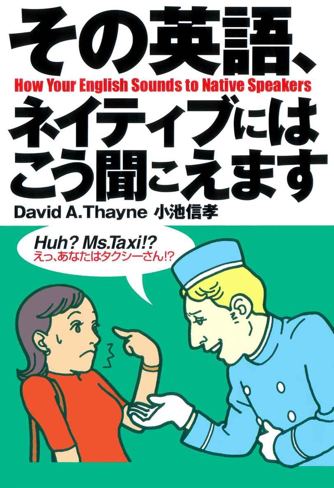
その英語、
ネイティブの耳には
こんなふうに聞こえていたのです
外国人の話す日本語を聞いていると、言いたいことはわかるけれどなんとなく違和感を感じることがありますが、日本人が英語を話す時にも、これと同じような現象が見られます。
たとえば多くの日本人は、ホテルで鍵をなくした時は I lost my key.、レストランでオーダーする時はMay I order?などと言います。また、「～したい」はwant to～を、「～をください」はgive me～といった表現をよく使います。
しかし、このような言い方は、ネイティブの耳にはつっけんどんな、あるいは場違いな表現に聞こえてしまうことがあるのです。
本書では、多くの日本人が正しいと信じて使っている、しかし、アメリカ人の耳には不自然に聞こえる、そんな例文を集めてみました。きっと、みなさんも知っている言い回しがたくさん出てきて、びっくりすることでしょう。なぜなら、ここで取り上げた例文は、英会話のテキストや学校の教科書などから集めたものばかりだからです。
さらに驚いたのは、売れている本ほど、このような表現がたくさん使われていたことです。つまり、それだけ多くの日本人が、ネイティブの耳には不自然に聞こえるような英語を話していたわけです。
さあ、さっそくこの本を読んで、I lost my key.やMay I order?、want to～、give me～などに変わる言い方を見つけてください。そして今度は、ネイティブの耳にも自然に響くような表現で自分の意思を伝えてみてください。ネイティブとの距離がぐっと近づくのはもちろん、英会話上級者の仲間入りができること、間違いありません。
その英語、ネイティブには
こう聞こえている！
●基本会話
●空港にて
●乗り物で
●ホテルに泊まる
●食事を楽しむ
●観光をする
●ショッピング
●電話をかける
●コミュニケーション
微妙なニュアンスがよくわかる。
ネイティブに近づく20の法則
●May I～？を丁寧で上品な尋ね方と思うのは大間違い。
●give me～は「無料でちょうだい」という物乞いの言葉。
●強い意志を表すwillと単なる未来を表すbe going to。
●お願いごとをするときのpleaseは事務的でそっけない。
●I want～は「～が欲しいよう！」という子どものおねだり。
●Thank you very much.は感謝の気持ちを表現しない。
●I think～は「絶対に～だ」、I think～は「～だと思うけど」。
●No, thank you.は相手の好意をむげにする冷たい言葉。
●goodは誉め言葉の「良い」でなく、及第点の「まあまあ」の意。
●be動詞を短縮しない話し方は自己主張が強すぎる話し方。
●「～できる」を表すcanとbe able toは同じ意味にはならない。
●相手の話にYes. Yes.と何度もあいづちをうつのはNG。
●「あっちに」のtakeと「こっちに」のbring。この違い、おわかり？
●This is a key.は「これはカギです」とは聞こえない。
●「もう一方」を表すthe otherと「ほかの」を表すanother。
●ボキャブラリーの少ない人こそhaveとgetを使い回せ。
●ネイティブの会話で頻繁に使われるI've got to～はI have toをより強調。
●I should～は「実はそうするつもりがない」ときの言い回し。
●mustとhave toは必ずしもイコールで結べない。
●「どれか」を尋ねるとき、使い分けに迷ってしまうwhichとwhat。
ここがおかしい！ ここが違う!!
日本で見かけたおかしな英語
●宣伝文句、注意書き
●カタカナ英語
●装丁 犬塚勝一
●イラスト 深川直美
●校正 東京出版サービスセンター
●編集・制作 主婦の友インフォス情報社
＊本書の内容についてのお問い合わせは主婦の友インフォス情報社企画出版部（03-3295-9465、担当＝久次米）までお願いいたします。
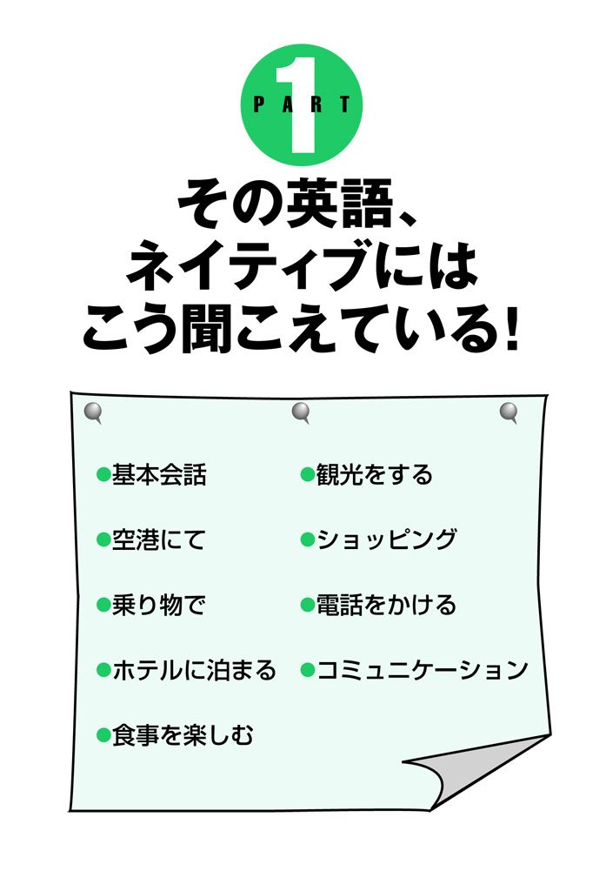
【基本会話】
ひさしぶり！
×I haven't seen you for many years.
あなたにはもう何年もお会いしていません。
単に事実だけを述べていて、感情がこもっていないように聞こえる。
How have you been?
「ひさしぶり」「元気だった？」のニュアンス。感情が伝わる表現だ。
Long time no see.
「本当にひさしぶり」。こんな表現も覚えておきたい。
【基本会話】
それじゃあ、またね。
（別れ際のあいさつ）
×Good bye.
あばよ！
イントネーション（「グッバイ!!」と強く言う）によっては、捨てぜりふのように聞こえる。あまりフレンドリーなあいさつではないので、ほかの表現を使った方が無難。
See you!
See you around.
親しい者同士でよく使われるフレンドリーなあいさつ。
【基本会話】
私は田中明子と申します。
×My name is Akiko Tanaka.
余の名前はア・キ・コ・タ・ナ・カなり。
ネイティブにとって日本名の苗字と名前を区別するのはむずかしい。また、My name is ～で始める言い方はスピーチ向きで、普通の自己紹介としてはやや不自然である。
I'm Akiko, Akiko Tanaka.
I'mと短縮形で始める。最初にファーストネームを言い、ひと呼吸おいてから、改めてファーストネームとファミリーネームを告げる。
【基本会話】
ありがとうございます。
×Thank you very much.
どうも、どうもありがとうございましたね！
言い方によっては皮肉っぽくなる。フレンドリーな間柄ではあまり使われない（PART2 Thank you very much.は感謝の気持ちを表現しない。参照）。
I really appreciate all your help.
感謝の言葉を述べるとき、ネイティブはappreciate（感謝する）という語を頻繁に使う。より心がこもった感じになる。
Thanks.
日本語では逆のような気がするが、実はThank you.よりもフレンドリーで心がこもっている。
Thanks a lot.
ネイティブの間でとてもよく使われるフレーズ。軽く「ありがと」といったニュアンス。
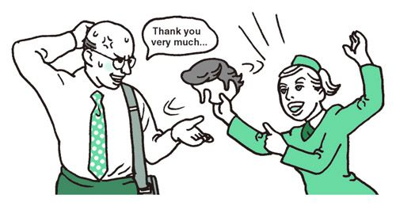
【基本会話】
けっこうです。
（相手の好意を断るとき）
×No, thank you.
もうけっこうですから！
言い方にもよるが、相手をつっぱねているような冷たい感じに聞こえてしまう（PART2 No, thank you.は相手の好意をむげにする冷たい言葉。参照）。
Thanks, but no thanks.
フレンドリーな言い方ならこれ。感謝の気持ちもきちんと伝わる。
No bother.
「気にしないでいいよ」「かまわないでいいよ」といったニュアンスで、助力などの申し出をさりげなく断るときに適した言い方。
【基本会話】
どういたしまして
×You're welcome.
あたりまえですよ。
やや冷たい言い方。できれば別の答え方をしたい。
Sure, no problem.
「どういたしまして」「いえいえ、いつでも言ってください」といったニュアンス。
【基本会話】
遅れてごめんなさい。
×Sorry.
わりー、わりー。
軽薄な感じで、きちんと謝っているようには聞こえない。これではただの開き直りだ。
I'm sorry to be late.
I'm sorryときちんと謝罪したあと、「遅れて」という言葉も添えるのがベスト。
Sorry about being late.
それほど深刻でない場合の謝罪に適している。「遅れて、ごめん」。
My apologies.
apologyは「陳謝」を意味する。「申し訳ないです」のニュアンス。
【基本会話】
失礼。
（相手の肩に触れたとき）
×I'm sorry.
私が悪うございました。
I'm sorry.はこちらの非を認めたときに使う。たとえば、足を踏んでしまった、時間に遅れてしまったときなど。
Excuse me.
相手の肩に触れた、くしゃみをしたときなどは、I'm sorry.よりExcuse me.が適している。さっと言えるようにしたい。
【基本会話】
ちょっといいですか。
×I would like to talk to you.
あなた様と少々お話しをさせていただいてもよろしいでしょうか。
深刻なニュアンスを含む。ちょっとしたことを尋ねるときにこのように話しかけると、街角勧誘のように思われて敬遠されるかも。
Got a minute?
「ちょっといいですか」のニュアンス。よりカジュアルな感じ。You got a minute? の短縮形。
Can I have a minute?
「ちょっと話してもいいですか」が直訳。
Can I talk to you a sec?
Do you have a sec?
「ちょっと話してもいいですか」「ちょっと時間ありますか」が直訳。a secはa secondの短縮形。よりカジュアルなひとことになる。
【基本会話】
だいじょうぶです。
×It's OK.
もういいから！ 放っておいて。
なげやりな感じで使われることが多い。
Don't worry about it.
「だいじょうぶだから心配しないで」のニュアンス。相手の好意に対して感謝の気持ちがあることが伝わる。
It's nothing to worry about.
「心配ないですから」。こちらも同様に使える。
【基本会話】
今、何時ですか。
×What time is it now?
ところで、今は何時なんだ？
これは何度か時刻を聞いた後で、ふたたび尋ねるときの聞き方。初めて聞くにはふさわしくない。
Do you have the time?
冠詞のtheをつけるのが重要。Do you have time?とtheを抜かすと「ねえ、ちょっと遊ばない？」の意になってしまうので要注意。
【基本会話】
えっ、何ですか。
×What?
はっ？
聞き取れなかったというより、相手を馬鹿にして「えっ?!」と言っているように聞こえる。
Pardon?
聞き返すならこれ。ただし、イントネーションを間違えると「なんですって?!」となるので、ソフトに言うことが大切。Excuse me?やCome again?も同意表現としてよく使われる。
【基本会話】
お名前を教えてください。
×What's your name?
あんたの名前は？
いかにも学校英語。自分の名前も名乗らずに、いきなり相手の名前を聞くのは失礼というもの。
I'm Makiko. And you are . . . ?
最初に自分の名を告げてから、さりげなく相手の名前を聞くのがベスト。
【基本会話】
それはいい！
×That's good.
いいんじゃないですか、それでも。
goodはかならずしも、日本語の「よい」を意味しない。言い方を間違えると、皮肉に聞こえることもある（PART2 goodは誉め言葉の「良い」でなく、及第点の「まあまあ」の意。参照）。
Sounds good.
It sounds good.の省略した言い方。「それでいいですよ」「それでかまいません」といったニュアンスが伝わる。
【基本会話】
日本語を話せる人はいますか。
×Is there anyone who can speak Japanese?
この世に日本語を話すことができる人はいるのでしょうか。
こちらの意図を理解してくれる人もいるが、相手によってはMaybe.（おそらくね）などと、冷ややかに言われてしまうかも。
Is there anyone here who can speak Japanese?
場所（here）をつけるのが重要。この一語が大切なので落とさないようにしたい。
これは機内に持ち込めますか。
×Can I bring this baggage on the plane?
この手荷物類一般を機内に持ってきてもよろしいですか。
baggageは「手荷物類」を指す集合的な語なので、個々の手荷物について話すときには使わない。この場合suitcaseやbagなどと具体的に伝えるとよい。
Can I take this suitcase on the plane?
「機内に持ち込む」と言いたいなら、bringではなくtakeを使う。takeとbringの使い分けは日本人にはむずかしい（PART2 「あっちに」のtakeと「こっちに」のbring。この違い、おわかり？参照）。
【空港にて】
私の席はどこですか。
×Where is my seat?
俺様の席はどこだ！
尊大な代議士が偉そうにモノを言っている感じ。Whereを文頭に持ってくると、高飛車に聞こえる場合がある。
Could you tell me where 15-C is?
Could you～？は人になにかを尋ねるときの定番の言い回し。「15-C」と、席番号を伝えるのもネイティブ流。
【空港にて】
バッグが棚に入りません。
×My bag isn't going to fit in the shelf.
バッグはきっと棚に入らないでしょうね。
isn't going to fit inは、「きっと入らないだろう」のニュアンスで、試す前から言っているように聞こえる。
My bag won't fit in the shelf.
won't fit in～とすると「～に入ってくれない」というニュアンスが出せる。実際に試した後に言うならこの言い方。
【空港にて】
すみません、通してください。
×Excuse me, may I go through?
お二人の間を通してもらってよろしいですか。
May I～？は許可を求めるときの言い回し（PART2 May I～？を丁寧で上品な尋ね方と思うのは大間違い。参照）。相手に判断を任せる場合に使われることが多いので、このような状況にはふさわしくない。go throughは二人の人の間を通ること。
Excuse me, I need to get by.
need to～は直訳すると「～する必要がある」。相手がどう言おうと、通らなければならない状況ではこの言い回しがベスト。get byは、「（一人の）人の横を通る」こと。よって、直訳すると「私は人の横を通る必要があります」。つまり、通して欲しいことになる。
【空港にて】
席を移ってもいいですか。
×Can I move?
引っ越していい？
どこへ移りたいのか伝えないと「引っ越し」の意味に。
Can I move to that seat over there?
to that seat over there（あっちのあの席に）と具体的に言う。移りたい席を指差して言うとよい。
【空港にて】
この便は定刻に出発しますか。
×Will the flight leave on schedule?
定刻に出発すると約束できますか。
なにかの約束をとりつけようとしているように聞こえる。こう言われた係員は答えにつまって、I think so, but I can't promise.（そう思いますが、約束はできません）なんて言ってくるかも......。
Is the flight expected to leave on schedule?
「その便は定刻に出発する予定ですか」「定刻に出発できそうですか」といったニュアンス。
【空港にて】
飲み物はなにがありますか。
×What drink can I have?
私が飲むことができる飲み物はどれですか。
このようにcan Iを使って尋ねると、もらえる飲み物に制限があるように聞こえる。食事制限を余儀なくされている入院患者が、看護師に向かって使いそうな言い方。
What kind of drinks do you have?
What kind of drinks～？とすれば、飲み物の種類を尋ねる言い方になる。相手が持っているかどうかを聞く場合can I haveでなく、do you have。機内で使うのに適した言い方だ。
What do you have?
「なにがありますか」のニュアンス。乗務員のWhat kind of drinks would you have？（飲み物をなににいたしますか）という問いには、このように返せばよい。
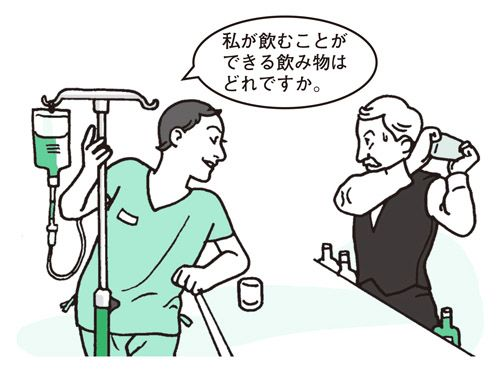
【空港にて】
コーヒーをください。
×May I have a cup of coffee?
コーヒーをマグカップで一杯いただけますか。
飛行機、特にエコノミークラスではあまり使われない言い方。a cup of coffeeと言うと、きちんとしたマグカップに入って出てくるコーヒーを思い浮かべる。May I～？も必要以上にへりくだった言い方なので避けたい。
I'll take coffee.
I'll take～は「～をください」「～をいただきます」の定番表現。決まり文句なので、このまま覚えておきたい。
【空港にて】
トレイをさげてください。
×Could you take away my tray?
私のトレイを奪い取ってくれませんか。
take awayと言うと、悪さをした子どもからおもちゃを「取り上げる」といったニュアンスになってしまう。
Could you take my tray?
take～は「～を持っていく」。つまり、「トレイを持っていってください」となる。takeだけで済ませるのがネイティブ流。
【空港にて】
毛布をください。
×May I have a blanket, please?
ねぇ、毛布をもらってもいいでしょう？
May I～, please？は「～してもいいでしょう?」という子ども言葉。母親に許可を求めるときによく使われる。
Could I get a blanket?
人からなにかをもらうときにgetで伝えることができれば、英語の上級者。Could I get～？はぜひ覚えておきたい表現。
【空港にて】
機内が寒いのですが。
×I feel cold.
寒気がします。
この言い回しは、空調でなく、自分の体調が原因で寒さを感じたときに使われることが多い。病気だと思われる可能性がある。
It's a little cold here.
It seems a little cold here.
主語をitにすれば、機内の気温が低いことがわかる。
【空港にて】
この飛行機は定刻に到着しますか。
×Is this flight on time?
このフライトの場合は時間どおりに到着していますか。
Is this flight～？というと、他の便と比較しているように聞こえる。また、on timeは到着後に使われる。
Are we on schedule?
「この便は予定どおりに飛行していますか」のニュアンス。「予定どおりに」はon schedule。
【空港にて】
乗り継ぎに間に合うか心配です。
（客室乗務員に言う）
×I'm worried about my connecting flight.
私は乗り継ぎ便のことがなんだか心配です。
worry about～は「～について心配する」。「乗り継ぎ便のなにが心配なの？」と質問されるかも。
I don't want to miss my connecting flight.
don't want to～は「～したくない」。直訳すると「乗り継ぎの飛行機に遅れたくありません」となる。なにをどのように心配しているのかを明確にすることが大切。
【空港にて】
入国カードの書き方を教えてください。
×Could you tell me how to fill in this immigration card?
入国カードの書き方を手取り足取り教えてください。
Could you tell me～？は「～について教えてください」、how to～は「～の仕方」。直訳すると「入国カードの記入の仕方というものをどうぞ教えてください」。転じて「なにがなにやらさっぱりわからないので、記入の仕方を一から十まで教えてね」といったニュアンスになり、相手にすべてを依存しているように聞こえる。
I have a question about this immigration card.
have a question about～で「～について質問がある」。なにか質問があったときには、このように聞くといい。
【空港にて】
酔い止めの薬をいただけますか。
×Please give me airsickness medicine.
ただで酔い止めの薬をちょうだい。
Please give me～は「お金を払うつもりはないけど、～をちょうだい」。これは無料にこだわった言い方（PART2 give me～は「無料でちょうだい」という物乞いの言葉。参照）。
Could I get something for airsickness?
Could I get something for～（～＝病名）？で、「～に効く薬をもらえますか」の意に。
【空港にて】
シートを倒してもいいですか。
（後ろの座席の人に聞く）
×Can I recline my seat?
今はシートを倒してもいい時間ですか。
機内では、離着陸時や揺れの激しいときなど、背もたれを元の位置に戻すように指示される。この言い方は、そのようなときに客室乗務員に向かって尋ねるのに適している。
Do you mind if I recline my seat?
Do you mind if～？は「～してもかまいませんか」の意。このとき気をつけたいのがイエス、ノーの返事。相手がNoと言ったら「いいですよ」を、Yesと言ったら「いやです」を意味する。
【空港にて】
私の荷物が出てきません。
×My baggage doesn't come out.
私の荷物は出てこないようになっています。
doesn't come outという現在形の言い方だと、習慣について述べていることになる。What kind of bag is that?（いったいどんなバッグなわけ?!）などと言われそう。
My baggage hasn't come out yet.
現在完了形を使うと、「もうそろそろ出てきてもいいはずなのに、まだ出てこないんです」といったニュアンスになる。
【空港にて】
これが手荷物引換証です。
×This is a claim tag.
これがまさに手荷物引換証というものです。ご存じないのですか。
冠詞のaをつけたThis is a～という言い回しは、相手になにかを説明するときに使われるもので、「これが～というものです」「これが～と呼ばれるものです、知らないの？」といったニュアンスになる（PART2 This is a key.は「これはカギです」とは聞こえない。参照）。空港で働く係員に向かってこう言ったら失礼だ。
This is my claim tag.
aではなく、myを用いるのがポイント。This isをHere'sに代えてもよい。
【空港にて】
手荷物引換証をなくしてしまったようなんです。
×I lost a claim tag.
手荷物引換証の1枚だけをなくした！
冠詞のaをつけてa claim tagとすると、「何枚もある手荷物引換証のうちの1枚だけがなくなりました」といったニュアンスになる。はじめから1枚しかない場合には使わない。
I think I've lost my claim tag.
aではなく、myを使うのがポイント。こうすれば「私が持っていたはずの手荷物引換証」のニュアンスが出せる。
【空港にて】
すぐに荷物を探して（調べて）ください。
×Please search my baggage right away.
すぐにバッグの中身を調べてください。
search～は「～の中身を調べる」、search for～は「～を探す」。たった一語で意味が違ってくるので気をつけよう。
Could you search for my baggage right away?
forを忘れずに。これで「すぐに探していただけますか」の意に。
【空港にて】
スーツケースが壊れています。
×My suitcase was broken.
私のスーツケースは以前壊れていました。
～was brokenとすると、以前は壊れていたが今は壊れていないように聞こえる。
My suitcase has been damaged.
荷物を預けてから受け取るまでの間に破損したのだということを伝えたいなら、完了形で伝えると誤解がなくてよい。また、このような状況での「壊れる」は、breakではなくdamage（破損する、傷つける）を使うのが適切。
【空港にて】
観光が目的です。
×I come here for sightseeing.
ここにはいつも観光で来ています。
現在形だとそこに行くことが習慣になっているように聞こえる。
I came here for sightseeing.
「観光のためにここに来ました」が直訳。cameと過去形を用いる。
I'm here to do some sightseeing.
「観光目的で来ました」「観光を楽しもうと来ました」といったニュアンス。do some sightseeingは「観光をする」。大変ネイティブらしい言い回しなので、是非覚えておきたい。
【空港にて】
ヒルトンホテルに滞在します。
×I will stay at Hilton Hotel.
ヒルトンホテルに滞在する決心を固めました。
I will～は強い意志や決意を表すときに使われる表現。
(I'm staying) At the Hilton.
入国審査でWhere will you be staying?（滞在先は？）と聞かれたら、シンプルにAt the Hilton.と言うのが自然。また、だれもが知っている有名ホテルの場合は、いちいち～Hotelと言わないのが、ネイティブ流。
【空港にて】
1週間、滞在します。
×I will stay for one week.
私は絶対に1週間滞在するつもりです。
I willは強い意志を表すときに使う（PART2 強い意志を表すwillと単なる未来を表すbe going to。参照）
I'll stay for one week.
I'llと短縮形にするだけで単純な未来を表す意に。
I'm going to stay for one week.
I'llの代わりにI'm going toを用いてもよい。
【空港にて】
日本円を300ドル分、両替してもらいたいのですが。
×I'd like to exchange 300 dollars with yen.
円を利用して、300ドルと交換したい。
「円とドルを交換する」ことをそのまま訳したような言い方。
I'd like to buy 300 dollars with yen.
両替とはある通貨で別の通貨を買うこと。よってbuyを使う。
Dollars for yen.
短く言うのならこの言い方。「円からドルに」。
【空港にて】
1ドル札でください。
（細かいお札が欲しいとき）
×One dollar bill, please.
1ドル札を1枚よろしくお願いします。
dollar billだけでも「1ドル札」を意味するため、one dollar billだと「1ドル札を1枚」の意にとられてしまう恐れあり。
Can I have it in one-dollar bills?
inを用いること、最後のbillsを複数にすることがポイント。
【空港にて】
この紙幣をコインに替えてください。
×Please change this bill to change.
この紙幣を小銭に変身させてください。
このような状況でpleaseを使うのはとても不自然（PART2 お願いごとをするときのpleaseは事務的でそっけない。参照）。また、動詞のchangeは「変化、変身させる」という意味合いが強いので、おかしな文になってしまう。相手はマジシャンなのだろうか......。
Could I get some change?
紙幣を差し出しながら、Could I get～？（～をいただけますか）と言う。ここでのchangeは名詞で「小銭」を意味する。
【空港にて】
為替レートはどのくらいですか。
×How much is the exchange rate?
為替レートの値段はいくらですか。
為替レートを買うわけではないので、How much～？という表現はおかしい。
What's the exchange rate?
what'sを使えば「為替レートはどうなっていますか」といったニュアンスになる。
How much is the yen?
how muchを用いるならこう言う。「円はいくらですか」。
【空港にて】
私は確かにリコンファームしました。もう一度調べてください
（予約が取り消されていたとき）
×I am sure I reconfirm my flight. Please check it again.
私は確かにリコンファームするくせがあります。もう一度調べてください。
この場合、reconfirmと現在形で言うと、習慣を述べているようなニュアンスになってしまう。こんなことを言ったら、余計に信じてもらえないかも。
I'm sure I reconfirmed my flight. Please check it again.
reconfirmedと過去形にする。
【空港にて】
乗り遅れてしまいました。ほかの便に変更することは可能ですか。
×I missed my connection. Can you make arrangements for another flight, please?
乗り遅れてしまいました。あなたにはほかの便を手配してもらってもいいですか。
自分がほかの便に変更して欲しいときに、Can you～?と聞くと意味が違ってきてしまう。これは自分ではなく、相手が乗る便を変更できるか尋ねるときの言い方。発券カウンターの係員が客に対して使いそうな表現。
I missed my connection. Can I make arrangements for another flight?
自分が変更できるかどうかを知りたいのであれば、Can I ～？と尋ねるのが適切。
【空港にて】
ヘッドホンの調子が悪いのですが。
×My headset is in bad condition.
わたしのヘッドホンはオンボロです。
in bad conditionと言うと、見た目からしてなにか問題があるように聞こえる。なお、headsetはheadphoneとしてもOK。
My headset doesn't work very well.
機械などの調子がおかしいとき、doesn't workをよく用いる。not～very wellは「あまり～でない」。これでヘッドホンがよく聞こえないことが伝わる。
【乗り物で】
タクシーはどこで拾えますか。
（街中で尋ねる）
×Where can I stop a taxi?
私はどこでタクシーを停止させることができますか。
stopを使うと意味がまったく違ってきてしまう。
Where can I get a taxi?
動詞にgetを使う。ネイティブ度満点の言い方なので、このまま覚えておきたい。
【乗り物で】
ヒルトンホテルまでお願いします。
×To Hilton Hotel, please.
ヒルトンホテルにぶつぶつ......。
相手はCan you take me to Hilton Hotel, please.の文頭のCan you take meの部分を聞き落としたように思うだろう。英語が得意な日本人が使いがちな表現だが、ネイティブはこうは言わない。
Hilton.
タクシーに乗ると運転手はたいていWhere to?（どこまで？）と聞いてくる。有名なホテルなら「ヒルトン」だけでOK。小さなホテルならABC Hotelなどと言えばよい。いずれにしても、toはつけない。
【乗り物で】
ここへ行ってください。
（メモや地図などを見せながら）
×Take me this, please.
これを私に持ってきてください。
ここでthisを使うのは考えもの。かなり意味不明なので、理解してもらえない可能性あり。
I need to go here.
地図などを指差しながら「ここへ～」と言うなら、thisではなくhereを使う。
【乗り物で】
冷房を入れてください。
×Could you turn on the cooler?
クーラーボックスのスイッチを入れてください。
冷房のcooler（クーラー）は和製英語。英語でcoolerと言うと、クーラーボックスを意味する。
Could you turn on the air-conditioning?
英語で冷房、暖房はair-conditioning。知らないと泣かされる単語のひとつだ。
【乗り物で】
窓を開けてもいいですか。
×Can I open the window?
私は窓を開ける能力があるでしょうか。
許可を求めているというよりも、窓を開ける能力があるかどうかを尋ねているように聞こえる。
Do you mind if I open a window?
Do you mind if ～? で「～してもかまいませんか」の意味に。このとき、勘違いしやすいのがyes、noの答え方。No, I don't.が了解、Yes, I do.は不承知の意味になる。相手からNoと言われて、「えっ、ダメなの？」と慌てないように。
【乗り物で】
いくらですか。
×How much?
いくらなのよ？
言い方によってはちょっと偉そうに聞こえてしまう。
How much is it?
最後にis itをつける。これだけでぐっと柔らかな響きになる。
What's the charge?
whatを使うならこれ。charge（料金）はfareに置き換えてもよい。
【乗り物で】
ここで止めてください。
×Stop here, please.
キャー！ ここで止めてよ！ お願い！
懇願しているように聞こえる。何事が起こったのか、相手がびっくりするかも。また、pleaseをつけずにStop here.などと言うと、「ここで止めろ！」と横暴な言い方になるので気をつけよう。
Here will be okay.
This'll be fine.
このような言い回しがよく使われる。「ここでいいです」「ここでけっこうです」の意。
【乗り物で】
ありがとう。お釣りはとっておいてください。
×Thank you. I will give you the change.
ありがとう。私はあなたにお釣りを差し上げる決心をしました。
I willは強い意志や決意を表す。チップを渡すには不自然な言い回しだ。
Thank you. Keep the change.
おつりをチップとして渡す時の決まり文句なので、このまま覚えておこう。
【乗り物で】
セントラル・パークまでいくらですか。
×How much will it cost me to go to Central Park?
セントラル・パークまで行くには、いったいいくら注ぎ込まなければならないの。
How much will it cost me to～？といった言い回しは、金額が大きい場合によく使われる。たとえば、家を買う時、How much will it cost me to buy a house?（家を買うのに資金はいくら必要ですか）といった具合に用いる。タクシー代程度では使わない。
How much is it to Central Park?
列車やバスなどの料金を尋ねる時には、How much is it to～？（～＝行き先、場所）でOK。
【乗り物で】
セントラル・パークはいくつめですか。
×How many train stops to Central Park?
セントラル・パークまで電車の停車駅はいくつありますか。
train stopsと言うと、くどい表現になってしまう。いくつめかを聞く場合はstopだけでよい。
How many stops to Central Park?
How many stops to～？で「～はいくつめですか」の意に。決まり文句なので、このまま覚えておきたい。
【乗り物で】
どこで乗り換えればいいのでしょうか。
×Where must I change trains?
私はどこで電車を乗り換える義務があるのでしょうか。
mustは義務が生じるときに使われる大げさな表現。相手は、「別に乗り換えなくてもいいんじゃない」などと答えてしまいたくなる。
Where do I need to change trains?
mustでなく、need to～を使うとより自然（PART2 mustとhave toは必ずしもイコールで結べない。参照）。対象となる列車は複数なので、trainsと複数形にする。
【乗り物で】
この席は空いていますか。
×Is this seat empty?
この席に今はだれも座ってないですよね。
この言い方だと、そのイスの上に人が座っているかどうかを尋ねることになる。そんなことは聞かなくても見ればわかる。席に先客がいるのかどうかを尋ねるときにはこうは聞かない。Yes, but it's taken.（ええ、でも人が来ますよ）なんて言われそう。
Is this seat taken?
「この席には人が来ますか」「この席には先客がいるのですか」といったニュアンス。決まり文句なので、このまま覚えよう。
【乗り物で】
次の駅はどこですか。
×Which is the next station?
次の駅はどっちですか。
whichは選択肢が少ないときに用いられる（PART2 「どれか」を尋ねるとき、使い分けに迷ってしまうwhichとwhat。参照）。電車や地下鉄、バスなどの停車駅はたくさんあるもの。よって、このような状況で使うのは不自然と言える。
Where do we stop next?
「次はどこに停まりますか」。whereを使うならこの言い方。
【乗り物で】
グランドセントラル駅までどれくらいですか。
（所要時間を尋ねる）
×How far is it to Grand Central Terminal?
グランドセントラル駅までどれくらいの距離がありますか。
how farは距離の尋ね方。時間を聞くときには使わない。
How long does it take to get to Grand Central Station?
おなじみのHow long does it take to～？を使う。目的地までの所要時間を聞くならこれ。
【乗り物で】
切符の買い方を教えてください。
×Could you let me know how to buy the ticket?
その切符の買い方をお知らせいただきたく存じます。
Could you let me know～? （～をお知らせください）は、文書でよく使われる表現。また、ticketの前にtheをつけると「その切符」と限定されてしまう。
Could you tell me how to buy a ticket?
会話での質問は、Could you tell me～？でよい。また、切符全般の買い方を聞く場合、冠詞はtheでなくaを用いる。How do you buy a ticket?（切符はどうやって買うの？）と尋ねれば、よりカジュアルな表現になる。さりげなく聞く場合はこちらで。
【乗り物で】
バスの時刻表はありますか。
×Do you have a schedule for bus?
バス君のための予定表はある？
冠詞がないとbusが人の名前のように聞こえてしまう。
Do you have a schedule for the bus?
busの前に冠詞のtheをつけるのが重要。
【乗り物で】
乗り換える必要はありますか。
×Do I have to transfer?
どうしても乗り換えないとだめなの？
Do I have to～？とすると、「本当は乗り換えたくないのだけど」というニュアンスが含まれる（PART2 mustとhave toは必ずしもイコールで結べない。参照）。It's up to you.（あなたの自由だけど）などと言われかねない。極度な面倒臭がり屋が使いそうなフレーズだ。
Do I need to transfer?
need toを用いると自然な言い回しになる。
【乗り物で】
このバスはセントラル・パークまで行きますか。
×Is this the bus that takes me to Central Park?
このバスが私をセントラル・パークに連れていってくれるのですか。
関係代名詞のthatを使うと、バスが強調され過ぎてしまう。これでは、チャーターバスについて話しているようなニュアンスになってしまう。空港に迎えに来ているホテルのバスの運転手に向かって、Is this the bus that takes me to the Hyatt？などと聞くにはぴったり。
Will this bus take me to Central Park?
関係代名詞のthatは不要。なお、動詞のtakeはgetに代えてもよい。
【乗り物で】
バスを降りるときはどうすればいいのでしょう。
（周囲の人に尋ねる）
×How do I make the driver stop the bus?
運転手にバスを止めさせるにはどうすればいいのでしょう。
「make＋人＋動詞」はいかにも英語らしい表現だが、これでは運転手を脅してバスを止めさせるかのように聞こえる。バスジャックでもする気なのか......。
How do I tell the driver to stop?
How do I tell～to...？（～＝人）は、「...するには～にどう言うのですか」。これを直訳すると、「降りるためには、運転手にどうやって伝えるのですか」。
【乗り物で】
そこに着いたら教えていただけますか。
（バスの中で運転手に頼む）
×Please let me know when the bus arrives.
バスがやってきたらご一報ください。
Please let me knowは会話より、文書で使うのに適した表現。arriveは「自分のところに着く、到着する」の意で、バスが来るのを待っているときの言い方。
Could you tell me when to get off ?
なにかを頼むときの定番表現Could you～？を使う。これで「降りる時に教えていただけますか」となる。
【乗り物で】
セントラル・パークはもう過ぎてしまいましたか。
×Did Central Park pass?
セントラル・パークは私たちを過ぎ去りましたか。
セントラル・パークを主語にすると、公園が動いたように聞こえてしまう。
Have we passed Central Park yet?
Have we gone by Central Park yet?
主語はweを用い、have we～yet？と完了形にする。passもgo byも「通り過ぎる」の意。
【乗り物で】
オートマチック車を2日間借りたいのですが。
×I want to rent an automatic car for two days.
オートマチック車の自動車を2日間借りたいんだよ～！
automaticだけでも「オートマチック車」の意になる。クルマがオートマチックで動くわけではなく、クルマのトランスミッションがオートマチックなだけなのだからautomatic carと言うのはおかしい。
I'd like to rent an automatic for two days.
want to～の代わりにwould like to～を使う。
【乗り物で】
1日いくらですか。
×How much is it one day?
「ある日」はいくらですか。
one dayは「ある日」「某日」の意。このままでは、かなり意味不明な質問になってしまう。
How much is it for one day?
「1日では」「1日の場合は」と言いたいならfor one dayとする。
【乗り物で】
クルマを見せてください。
×May I see the car?
そのクルマを遠くからちらっと見せてもらえますか。
see the carと言うと「クルマをちらっと見る」「遠くから見る」といったニュアンス。100メートル先に停めてあるクルマを指差して、It's over there.（ほらあそこのあれだよ）なんて言われちゃうかも。
Can I look at the car?
内部までよく見せてもらいたいときにはこのように尋ねる。海外でレンタカーを借りるなら、クルマの内部までしっかりと見せてもらい、きちんと説明を受けてから借りたい。
【乗り物で】
全補償の保険に入りたいのです。
×I'd like a full coverage for this insurance.
この保険を売るので、全補償をください。
I'd like～for...は「...を売るからその分の～をください」というニュアンスの交換を申し出るときの言い回し。I'd like ＄500 for this car.（この車を売るので500ドルください）といった具合に使う。
I'd like full insurance coverage.
I'd like full-coverage insurance.
full-coverage insurance で「全額保険」の意。
I'd like full-coverage.
なにについて話しているのか明らかなのでfull-coverage（全額補償）だけでも十分。
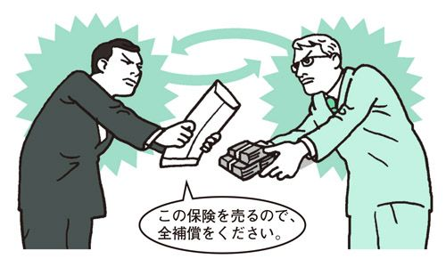
【乗り物で】
緊急時の連絡先を教えてください。
×Which number should I call in case of an emergency?
緊急の場合はこの中のどっちの番号にかければいいですか。
Which number～？はいくつか選択肢がある中で「～はどの番号ですか」と尋ねるときの言い回し。電話番号の短いリストなどが目の前にある場合はこれでもOK。
What number should I call in case of an emergency?
電話番号はwhichではなくwhatを使って尋ねるのが普通。
【乗り物で】
どんな車種がありますか。
×What kinds of cars do you have?
そちらのクルマってどんなクルマ？
聞き方がおおざっぱすぎる。これだとクルマの走り具合や傷み具合などといった車種以外のことについて尋ねているように聞こえ、相手はなにが知りたいのか理解できない。Just regular cars.（ごく普通のクルマですけど）なんて答えが返ってきてしまうかも。
What models do you have?
具体的に車種を尋ねるならこの言い方がベスト。
【乗り物で】
借りたい車に試乗はできますか。
×Can I drive a car before I rent it?
どのクルマでもいいから、借りる前に試乗できますか。
冠詞のaを付けると「どのクルマでもいいから」という意味になってしまい、乗りたいクルマをまったく指定していないことになる。試乗するなら、借りるつもりのクルマに乗らなければ意味がない。
Can I drive the car before I rent it?
試運転したいクルマが決まっているなら、冠詞はtheにすること。
【乗り物で】
クルマをぶつけてしまいました。警察を呼びたいのですが。
×I hit a car. I'd like to call the police.
クルマを殴っちゃった。警察を呼ばせていただこうかな。
「クルマをぶつけた」という意味が通じたとしても、この言い方では完全に自分の非で相手のクルマにぶつけた印象になってしまう。また、I'd like to～はこのような状況で使うには丁寧すぎて不自然。
I was in a car wreck. I need to call the police.
be in a car wreckで「自動車事故にあう」の意。
【乗り物で】
タイヤがパンクしました。交換していただけますか。
×I have a flat tire. Can I change it?
タイヤがパンクしました。私は交換することができますか。
Can I change it?と言うと自分で交換するかのように聞こえる。
I have a flat tire. Can you change it?
修理工にタイヤの交換を頼むなら、Can I ～? ではなくCan you ～? と言わなければならない。
I have a flat tire. Can you fix it?
fixは「 修理する、元どおりにする」の意。
【乗り物で】
バッテリーが上がったようです。
×The battery is high.
バッテリーがハイになっています。
highは「麻薬かなにかで気分がハイになって」という意味でよく使われるため、逆にいつもよりエンジンの調子が良いように聞こえてしまう。
The battery's dead.
直訳すると「バッテリーが死んでいる」。転じて「バッテリーが上がる」の意になる。
【ホテルに泊まる】
これが確認書です。
×This is a confirmation slip.
これが確認書というものです。
This is a～は人になにかを教えるときの言い方。たとえば、研究発表で「これが○○というものです」などと、指差しながら説明する。従業員に向かってこのような言い方をすると、I know.（知っているわよ）などと切り返されてしまうかも。
Here's my confirmation slip.
Here's～は「これが～です、はいどうぞ」と相手になにかを差し出すときに使う決まり文句。学校英語では、何でもかんでもThis is～で済ませる傾向があるが、ネイティブらしい自然な英語を目指すなら、きちんと使い分けたい。
【ホテルに泊まる】
もう少し大きい部屋に変えてください。
×Could you change my room to a larger room?
私の部屋をもっと大きい部屋にリフォームしていただけますか。
change my roomは「その部屋の構造（たとえば間取り）を変える」の意。リフォーム業者に向かって使いそうなひとことだ。
Could you fix me up with a bigger room?
fix up with～（～を手配する）を使えば、意図がきちんと伝わる。
【ホテルに泊まる】
エキストラベッドを入れることはできますか。
×Can we use an extra bed?
私たちはエキストラベッドが必要でしょうか。
Can use～または、Could use～は「～を必要としている」という意味の言い回し。たとえば、I could use some help.（助けてくれるとありがたいのですが）といった具合に使う。
Can we have an extra bed?
haveを使うことで「エキストラベッドをもってきてもらえますか」の意になる。
【ホテルに泊まる】
貴重品入れの使い方を教えてください。
×How can I use the safety box?
いったいどうしたら私は貴重品入れを使うことができるのでしょう？
主語が「私」になると、こんな仰々しいニュアンスになってしまう。
How does the safety box work?
貴重品入れを主語にして、動詞にworkをもってくれば、自然な言い回しになる。
【ホテルに泊まる】
水道の水は飲めますか。
×Can I drink water?
私は水を飲むことができますか。
自分の能力の有無を尋ねているように聞こえる。答えに窮する相手の顔が目に浮かぶ。
Is it okay to drink the tap water?
Is it okay to～？は、「～してもいいですか」。tap waterは「水道水」。「水道水を飲んでもいいですか」が直訳となる。
Is the water safe to drink?
簡単に言うならこれ。「（水道の）水は安心して飲めますか」。
【ホテルに泊まる】
朝食は何時からですか。
×What time can I have breakfast?
私は何時に朝食を食べることができるのですか。
レストランの朝食タイムを聞くのに、わざわざcan I have～？などと言わなくてよい。食事時間が決められている入院患者ではないのだから。
What time is breakfast?
「朝食タイムは何時ですか」。シンプルにこれでOK。
【ホテルに泊まる】
朝食はどこでとれますか
×Where can I have breakfast?
私が朝食をとってもいい場所はどこですか。
この言い方だと朝食がとれる場所でなく、朝食を食べていい場所を尋ねていることになる。Anywhere you want.（部屋でも庭でもお好きなところでどうぞ）なんて答えが返ってきてしまう可能性あり。
Where can I get breakfast?
haveではなく、getを使うのがミソ。haveはただ単に「食べる」の意だが、getは「食べに行く、食べ物を買いに行く」といったニュアンスを含む。getはさまざまな意味を持つ便利な動詞で、ネイティブはあらゆるシチュエーションで使う（PART2 ボキャブラリーの少ない人こそhaveとgetを使い回せ。参照）。
【ホテルに泊まる】
7時にモーニングコールをお願いします。
×Morning call at seven, please.
7時にチンプンカンプンをお願いします。
morning callという言い方は、どちらかというとイギリス英語。アメリカでは通じないことはないがあまり一般的とは言えない。
I'd like a wake-up call at seven, please.
「モーニングコール」はwake-up callと覚えておこう。
【ホテルに泊まる】
部屋をきれいにしてください。
（ベッドメーキングが済んでいないとき）
×Could you clean up my room, please?
めちゃくちゃな私の部屋を片づけてくれますか。
clean upと言うと、部屋がかなり散らかっているように聞こえる。ものすごく散らかっているならこの言い方でもOK。その場合、チップははずんでおくようにしたい。
Could you clean my room?
通常のルームメイクを頼むなら、cleanだけでOK。
Could you make up my room?
make upを用い、「ルームメイクお願いします」と言ってもよい。
【ホテルに泊まる】
どなたですか。
（部屋をノックされたとき）
×Who are you?
だれだ？
見ず知らずの人に対して使うにはかなり無礼な言い方。警官の尋問のように聞こえる。うっかり使わないように気をつけたい。
Who is it?
「どなたですか」。扉を開ける前、訪問者を確認するときの一般的な言い方。用心のため、ドアを開ける前に必ず相手を確認しよう。
【ホテルに泊まる】
はい、今行きます。
（部屋をノックされたとき）
×Just a minute, please.
少々時間がかかります。
これは扉を開けるまでに、少し時間が必要なときに使われる表現。
I'm coming.
すぐに出られるのなら、こちらの言い方。
【ホテルに泊まる】
入っていいですよ。
（ホテルの従業員に入室を許可するとき）
×Come in, please.
どうかお入りになってくださいませ。
お客さんを部屋に招きいれるときの改まった言い方。ホテルの従業員に向かって言うには適さない。
Come on in.
Come right in.
よりフレンドリーな表現。「どうぞ遠慮しないで」のニュアンスが含まれる。
【ホテルに泊まる】
荷物を取りにきてください。
（フロントに電話する）
×Could you come to pick up my baggage?
荷物を拾うためにきてもらえますか。
pick upは、「（預けていたものを）受け取る」「車で（人を）拾う」「拾い上げる」といった意味。よってこの言い方では、床に落ちた荷物を拾わせるために人を呼び付つけているように聞こえる。
Could you come and get my baggage?
come and get～で「～を取りにくる」の意になる。ネイティブらしい言い回しのひとつだ。
【ホテルに泊まる】
精算書が間違っていませんか。
（明細を見ながら）
×I think there is a mistake in this bill.
清算書のどこかに間違いがあるような気がしてなりません。
in this billは「この清算書のどこかに」の意。「何が間違っているのかはわからないが、どこかがおかしいような気がする」といったあいまいなニュアンスになる。
I think this bill is wrong.
This bill is wrong.（この清算書は間違っている）とストレートに言う。ただし、文頭にI think～を用いて婉曲的な表現にすること。
【ホテルに泊まる】
朝食の代金はその場で払いました。
（明細書を見ながら）
×I paid for the breakfast when I got it.
朝食の代金はとりに行ったときに払いました。
when I got itはwhen I went and got itを短くした形で、「とりに行ったときに」というニュアンス。よって、レストランで食べたり、ルームサービスで部屋に持ってきてもらった場合には、このような言い方はしない。
I paid for breakfast at the restaurant.
「朝食の代金はそのレストランで払いました」が直訳。つまり、朝食を食べたときに支払いを済ませたことを意味する。
【ホテルに泊まる】
シャワーが故障しています。
×The shower is broken.
シャワーの蛇口やコックが壊れちゃってます。
brokenと言うと、単にお湯が出てこないだけでなく、部品も取れてしまっていたりして、シャワーそのものが完全に使い物にならないことを表す。
The shower isn't working.
The shower doesn't work.
シャワーが正常に機能せず、故障していることを伝えたいならこの言い方。動詞にworkを使うのがポイント。
【ホテルに泊まる】
荷物を運んでください
×Could you take my baggage?
私の荷物を自由に持ってっちゃってくれない？
運ぶ場所まできちんと言わないと、こんな誤解を招いてしまう。
Could you take my baggage to my room?
baggage（荷物）のあとに、to＋場所をつける。これで荷物が目的の場所まで運ばれるはず。
【ホテルに泊まる】
テレビの映りが悪いのですが。
×There is something wrong with the TV set.
テレビがなんだかおかしいぞ。
映り具合がどうこうというより、なんだかわからないが、とにかくおかしいといったときに使われる言い方。たとえば、テレビから煙が出ているとか。
My TV isn't working.
動詞はworkを使うのが一般的。
【ホテルに泊まる】
コンセントのつなぎ方を教えてください。
（電気製品を使うとき）
×Could you tell me how to connect?
接続の仕方を教えてください。
how to connectは「どうくっつけたらいいのか」というニュアンスなので、プリンターやスピーカーなど、周辺装置とコンピュータを接続したいときの聞き方になる。たとえば、Could you tell me how to connect the computer and printer?（コンピュータとプリンターの接続の仕方を教えてください）。
Could you tell me how to plug it in?
plug inは「コンセントに差し込む、プラグで接続する」の意。
【ホテルに泊まる】
出発時刻まで荷物を預かってもらえますか。
×Could you keep my baggage until my departure time?
飛行機が離陸するまで荷物を預かってもらえますか。
departure timeは「飛行機の離陸時刻」。離陸してから荷物を返されてももう遅い......。
Could you keep my baggage until I leave?
ここで言う「出発時刻」は「ホテルを去る時刻」なので、until I leave（ホテルを出るまで）と言った方が適切。
【ホテルに泊まる】
部屋を替えてもらえますか。
×Could I get another room?
もう一部屋貸してもらえますか。
another roomと言うと、今ある部屋のほかにもう一部屋借りたいように聞こえる。
Could I get a different room?
different roomとすれば、部屋を替えて欲しい意図が伝わる。
Could I switch rooms?
switch（移る）という動詞を使えば、さらにシンプルな表現に。
【ホテルに泊まる】
お湯が出ません。
×Boiling water doesn't come out.
熱湯が流れ出てきません。
boiling waterは「煮えたぎる熱湯」を意味する。そんな熱湯が蛇口から出てきたら大変なことになる。
The hot water doesn't work.
「お湯」はhot water。～doesn't workは「～がきちんと作動しない」という意味の言い回し。さまざまな場面で使えるので覚えておこう。
【ホテルに泊まる】
部屋に鍵を置き忘れました。
×I left my key in the room.
鍵は部屋に置いたままです。
カギを部屋に置いて、自動ロックの部屋を出てしまったときの言い方としては少し不自然。英語らしく言うなら「カギを置き忘れた」ことよりも、「部屋に戻れなくなった」ことを強調して話す。
I'm locked out.
I got locked out.
直訳すると「締め出されました」。このように言った方が自然に聞こえる。ホテルの従業員も、事態をすぐに理解してくれるだろう。
【ホテルに泊まる】
鍵をなくしてしまったようなんです。
×I lost my key.
鍵がなくなったんだよ！
ちょっと傲慢な感じがする表現。自分の不注意で鍵をなくしたときの言い方としては不適切。
It looks like I lost my key.
It seems I've lost my key.
It looks likeやIt seemsを用いると、「（なくしてしまった）ようなのですが」といったニュアンスが出る。断言せずに言葉を濁すのは、日本語でも英語でも同じ。
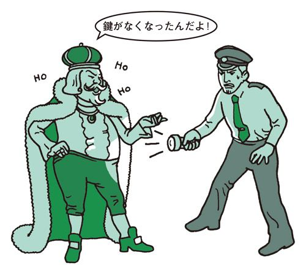
この辺りのおいしいレストランを教えてください。
×Please teach me a delicious restaurant nearby.
お願いですから、近くのおいしいレストランを伝授してください。
teachはそこに学習がともなう場合の「教える（教授する）」。よって、このような状況では使わない。
Could you recommend a nice restaurant near here?
なにかを頼むときの決まり文句Could you～？を使う。recommendは「勧める」の意。「おいしい」はdeliciousでなく、niceと表現する方がより自然。
Any nice restaurant around here?
くだけた言い方。尻上がりに言うことで肯定文が疑問文になる。
【食事を楽しむ】
3名で今晩6時からお願いします。
×We are three and at six tonight.
私たちは3才です、そして今夜6時に。
We are threeだけだと、年齢を表すことになる。
A party of three at 6:00 tonight.
a party of～を用いるのがポイント。このように言えば、誤解されることなく正しく伝わる。
【食事を楽しむ】
あまり高くないレストランがいいです。
×I'd like a restaurant not too expensive.
あまり高くないレストラン物件をください。
I'd like～は「～をください」の意。これではレストランを買おうとしているように聞こえてしまう。
I'm looking for a restaurant that's not too expensive.
be looking for～（～を探している）を使う。
Is there a restaurant nearby, not too expensive?
Is there～？を使えば、「近くにレストランありますか。あまり高くないところで」となる。nearbyとnot tooの間で少し間合いをとる。
【食事を楽しむ】
この地方の名物料理はなんですか。
×What is the local food?
この辺りで採れる食材はなんですか。
これでは名物料理でなく、地元で採れる食材を尋ねていることに。
Are there any local specialties?
「～がありますか」の定番表現Are there any～？を使う。地元の名物料理はlocal specialties。
【食事を楽しむ】
予約は必要ですか。
×Must I make a reservation?
私は予約を入れる義務がありますでしょうか。
mustは深刻な問題について語るときに多く使われる表現。日常会話で用いるととても不自然。
Do I need reservations?
「～は必要ですか」と言いたいのなら、Do I need～?を使うのが一般的。a reservationでなく、reservationsと複数形にするのも忘れずに。
Are reservations required?
もっとも簡単な言い方ならこれ。
【食事を楽しむ】
どのくらい待ちますか。
×How long do we have to wait?
いつまで待たせるつもり？
質問というより、文句を言っているように聞こえる。実際に何十分も待たされて、抗議するならこの言い方でOK。
How long's the wait?
「待ち時間はどれくらい？」といったニュアンスならこの言い回しで。the waitは「待ち時間」の意。
【食事を楽しむ】
店は何時まで開いていますか。
×What time do you finish?
君、仕事は何時に終わるの？
What time do you finish work?を省略して言った形。ナンパしているのかと思われる表現なので気をつけたい。
What time do you close?
When do you close?
「（店を）閉める」という動詞は、日本でもよく使われるcloseでよい。finishは「完了する」の意が強い。たとえば、I'll finish this report at 5:00.（5時にこのレポートを書き終えるつもりです）といった具合。
【食事を楽しむ】
メニューを見せてください。
×Give me a menu.
メニューをくれ！
威張っているように聞こえる。良識ある大人はこうは言わない。
Can I have a menu?
Can I have ～？（～をください、～を見せてください）を使えば自然な言い回しに。店員さんになにかを持ってきて欲しいときに使う言い方なので覚えておきたい。
【食事を楽しむ】
では、待ちます。
×Okay, we're waiting.
じゃあ、待っているから急いでね。
現在進行形にすると、相手を急かしているように聞こえる。急いで欲しい相手にプレッシャーを与えたい場合はこう言えばよい。
Okay, we'll wait.
we'llと短縮した未来形にすると、さりげなく聞こえる。
【食事を楽しむ】
何か軽いものを食べたいです。
×I'd like some light foods.
目方の軽い食べ物をいくつか食したいのですが。
日本語で軽いものと言うと「あっさりしているもの」を表すが、英語のsome light foodsだと、文字どおり「目方が軽いもの」を指す。
I'd like something light.
「なにか軽い物」はsomething light。
Something light would be nice.
something lightを主語にした言い方はネイティブがよく使う。
【食事を楽しむ】
ちょっと待ってください。
（「ご注文は？」と聞かれて）
×Just a moment, please.
一瞬だけ待ってください。
これは数秒で注文ができるときの言い方。こう言われたウェイトレスは、そのままテーブルの前で待つだろう。
I need just another minute.
数分待って欲しいならこの言い方。ウェイトレスはいったんテーブルを離れるので、ゆっくりとメニューを見ることができる。
I'm not ready to order yet.
「オーダーの準備はできていません」が直訳。だいぶ時間がかかるときはこちらの言い方がベター。
【食事を楽しむ】
おいしいですね。
×It's good.
まあまあじゃない。
goodは言い方によって、褒め言葉でなくなる微妙な単語（PART2 goodは誉め言葉の「良い」でなく、及第点の「まあまあ」の意。参照）。使い方には気をつけたい。
This is really good.
「おいしい」はreally goodと表現すれば、ストレートに伝わる。
【食事を楽しむ】
注文をお願いします。
×May I order?
注文させてもらってもよろしゅうございますか。
この場合のMay I～？は、やたらとへりくだっているように聞こえる。オーダーするのに許可を求める必要はない。
I'd like to order.
「注文をお願いします」の決まり文句。
I'm ready to order.
be ready to～は「～の準備ができている」。つまり注文が決まったことを表す。英語らしいスマートな表現。
【食事を楽しむ】
またにします。
×We'll come back again.
またあとで戻ってきます。
こう言うと、その日のうちにもう一度戻って来ると思われる。
We'll come another day.
another day（別の日）と言うのがポイント。これで「また来ます」「また今度にします」といったニュアンスが伝わる。
【食事を楽しむ】
あれと同じ料理が欲しいのですが。
（近くの人の料理を見ながら）
×Can I have the same dish as that one?
あれと同じ皿をもらっていい？
same dish as that oneと言うと、「あれと同じ皿」の意になってしまい、食べ物ではなく、皿の話をしているように聞こえてしまう。
Can I have what he's having?
「彼（あの人）が食べているのと同じものをもらえますか」が直訳。役立つ表現なので覚えておきたい。
I'd like the same thing he's having.
「～が欲しい」の定番表現I'd like～を使ってもよい。
【食事を楽しむ】
フォークを落としてしまいました。
×I dropped the fork.
みんなで使っていた唯一のフォークを落としてしまった。
冠詞のtheをつけてthe forkと言うと、フォークが限定されるため、the one and only fork（唯一のフォーク）の意になってしまう。たとえば、サラダをとり分けるためのフォークとか。
I dropped my fork.
自分で使っていたフォークを落としたのなら、my forkとする。
【食事を楽しむ】
これはどんな料理ですか。
（メニューを指しながら）
×What is it?
なにこれ～？
食べ物を指してitを使うのはとても無礼なこと。家庭の食卓でも、子どもが料理を指差してWhat is it?と言えば、必ず母親に叱られる。
What's this?
「これはどんなの？」「これはどんなもの？」といったニュアンス。料理について説明してもらうときによく使われる聞き方。
What does this taste like?
「これはどんな味がするのですか」という具体的な尋ね方。
【食事を楽しむ】
これにします。
（メニューを指して）
×I want this.
これが食べたいよ～！
子どもっぽい言い回し。普通、大人はこのような言い方はしない。
I'd like this.
I'd like～は「～をください」「～にします」の意で、食事などを注文する時の定番表現。
【食事を楽しむ】
ワインをもう一杯ください。
×Would you bring me another wine, please?
別の種類のワインを持ってきてくれますか。
another wineとすると、「別のワイン」の意になる。これでは同じワインをお代わりするつもりが、別の種類のワインが運ばれてきてしまうかもしれない。さらに、店の人から、What would you like?（何になさいますか）と、聞かれる可能性も。
Would you bring me another glass of wine?
「もう一杯」はanother glass of。glass ofを落とさないことが大切。
Could I have some more wine, please?
some more wineを用いてもよい。
【食事を楽しむ】
これはなんの値段ですか。
（勘定書を見ながら）
×What is this?
これはなんなのよ？
質問しているのではなく、文句を言っているように聞こえる。
What's this for?
勘定書に書かれた金額のひとつを指差して言うならこの言い方がベスト。「これはどの分の値段ですか」といったニュアンス。
【食事を楽しむ】
これはどうやって食べるのですか。
×Please tell me how to eat this.
どうかこの料理の食べ方を伝授してください。
食べ方を聞くだけなのにplease tell me（お願いですから教えてください）というのは、仰々しく聞こえて不適切。お願いするほどのことではない。
What's the proper way to eat this?
「正しい食べ方はどうするのですか」という意味の少々かしこまった言い方。proper wayは「正しい方法」。
How is this eaten?
「これはどうやって食べられるのですか」が直訳。気軽に尋ねるならこの言い方でもよい。
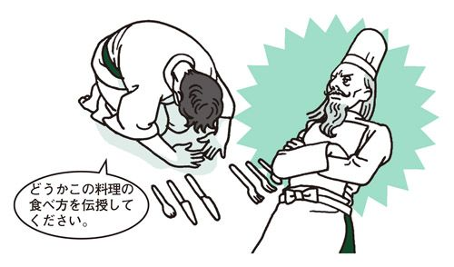
【食事を楽しむ】
これは注文していないと思いますが。
（注文していない料理が運ばれて）
×I didn't order this.
こんなもの注文してないわよ！
相手を責めているように聞こえるのでこういった言い方は避ける。
I don't think I ordered this.
文頭にI don't thinkを持ってくると、柔らかなニュアンスになる。
Are you sure this is mine?
「あら、これは注文したかしら？」。こんなふうに言えれば、英語上級者の仲間入り。
【食事を楽しむ】
もう結構です。
（ウェイターにデザートをすすめられて）
×No, thank you.
もういらない。
言い方によっては冷たく聞こえる。アメリカなどでは、ウェイターやウェイトレスはとても気さくに接してくれる。こちらもできるだけフレンドリーに受け答えしたい。
I'm full. Thank you.
直訳すると「もうおなか一杯です。ありがとう」となる。やんわりと断るならこの言い方がベスト。
【食事を楽しむ】
このスープはぬるいです。取り替えていただけますか。
×This soup isn't hot. May I have another soup?
このスープは熱いことはない。別の種類のスープを持ってきていただけますか。
hotは「熱い」の意。普通、熱いスープは冷ましてから食べるため、これでは苦情を言っているようには聞こえない。isn't hot enough（十分熱くない）と言うならOK。また、May I have another soup? は、ネイティブの耳にはMay I have another kind of soup?（別の種類のスープをいただけますか）と同じに聞こえる。
This soup is cold. Could you bring me another bowl?
「冷めている」「ぬるい」はcoldでOK。Could you bring me another bowl?は「別のを持ってきてください」「取り替えてください」といったニュアンス。bowlは「スープ皿」「深皿」の意。
【食事を楽しむ】
持ち帰ります。
（ファーストフードで）
×I'll bring it.
私はそれを持って入ります。
これだと「持ち帰る」ではなく、「持って来る」の意になる。
To go, please.
英語で「持ち帰り（テイクアウト）」はto go。「テイクアウト」はカタカナ英語。
【食事を楽しむ】
コーヒーのおかわりをください。
×Could you give me some more coffee, please?
もっとコーヒーをただでもらえますか。
Could you give me～, please?は「～をただでもらえますか」といったニュアンスの言い回し。卑しい感じに聞こえるので、避けた方が無難。コーヒーの試飲コーナーじゃないのだから......。
Could I get a refill?
おかわりをもらうときの決まり文句。覚えておこう。refillは「おかわり」の意。
【食事を楽しむ】
残った料理を持ち帰ることはできますか。
×Can I have this to go?
テイクアウトはできますか。
ファーストフード店でテイクアウトの注文をしているように聞こえる。きちんとしたレストランでこう言ったら馬鹿にされるかも。
I'd like to take this home.
「持ち帰りたいのですが」が直訳。これだけでも十分通じる。
Would you bring me a doggie bag, please?
「持ち帰り用の袋をもらえますか」doggie bagはレストランなどで食べきれなかった分を持ち帰るときにもらう袋のこと。
【食事を楽しむ】
勘定をお願いします。
×Check, please.
お客様、お支払いをお願いします。
店の人から客に向かって「支払ってください」と言っているように聞こえる。
Can I have the check?
勘定を頼むとき、ネイティブがもっとも使うのがこの言い方。Can I have～？は「～をください」の定番表現。
【食事を楽しむ】
部屋の勘定につけておいてください。
（ホテルのレストランで）
×Will you charge it to my room?
私の部屋の勘定につけますか、それともつけないですか。
Will you ～？は「～しますか、それともしないのですか」の意で用いることが多い。
Would you charge it to my room, please?
依頼の場合は、Would you ～？を用いる。「部屋につけておいていただけますか」「部屋の勘定につけてください」といったニュアンスになる。
【食事を楽しむ】
おつりが間違っているようです。
×You gave me the wrong change.
おつり、間違ってるわよ。ごまかそうとしていない？
はっきりと断言し、相手を露骨に非難しているように聞こえる。
I think I got the wrong change.
文頭にI thinkを持ってくると、「（おつりが間違っている）ようですが」のニュアンスが出る。柔らかい言い方で、相手を責めているような感じはない。
【食事を楽しむ】
フライドポテトのLサイズをください。
（ファーストフードで）
×Please give me a large fried potato.
大きなジャガイモの丸揚げをください。
a large fried potatoだと「大きなジャガイモの丸揚げ」というおかしな料理になってしまう。You don't want it sliced?!（スライスしなくていいの?!）なんて驚かれてしまうかも。また、Please give me～も、子どもっぽい言い方に聞こえる。
I'd like one large French fries.
フライドポテトは英語ではFrench fries。料理を注文するときはI'd like～を用いるのがベスト。
【観光をする】
地下鉄の路線図はありますか。
（ホテルのコンシェルジュなどに聞く）
×I'd like a subway route map.
地下鉄の路線図をひとつくださいな。
I'd like～は「～をください」という定番表現。これでは、ファーストフード店でハンバーガーを注文しているように聞こえてしまう。
Where can I get a subway map?
「地下鉄の路線図はどこで手に入れられますか」が直訳。地下鉄の路線図がもらえるかどうかわからない場所で使うなら、このような言い回しが自然。
【観光をする】
そこへの行き方を教えてください。
×Could you please tell me how to get there?
そこへの行き方をどうかこの私に教えていただけませんでしょうか。
お願いの念が強すぎ、やたらと仰々しい表現になってしまう。聞かれたほうもびっくりしてしまう。
How do you get there?
道筋を聞くときの決まり文句。「そこへはどうやって行けばいいのですか」といったニュアンス。Iではなく、youを使うのがポイント。
What's the best way to get there?
「そこへのいちばんよい行き方は？」と聞いてもよい。
【観光をする】
この地図で教えてください。
×Please use this map to show me.
この地図を使って説明してみてごらん。
教師が生徒に向かって話しているような言い回し。
Could you show me the way on this map?
教えてもらいたいときは、Could you show me～？を使うとよい。「（地図）上で」はon。イメージしやすい前置詞だ。
【観光をする】
ひとりいくらですか。
×How much is one person?
人間ひとりいくらですか。
これでは人身売買になってしまう。我らは奴隷に非ず。
How much is it per person?
is itとper person（ひとり当たり）を使うのがポイント。このまま覚えてしまおう。
How much is one ticket?
「チケット1枚でいくらですか」。さらに簡単に言うならこの言い方。
【観光をする】
入場料はいくらですか。
×How much does the entrance fee cost?
入場料を買うにはいくらかかるのですか。
entrance feeとcostの意味が重複しておかしな文に。よくある間違いなので十分に気をつけたい。
What's the entrance fee?
What's～？で、「～はいくらになってるの？」という意味。ここでは、「入場料はどのくらい？」となり、さらりと尋ねるのにぴったりの表現となる。
【観光をする】
歩いて何分くらいかかりますか。
×How far is it by walking?
歩いて距離はどのくらいですか。
How far～？は、距離を尋ねる時に使う。by walking（歩いて）でもby car（車で）でも、距離は変わらないことを考えると、おかしな表現ということがわかる。
How long does it take to walk there?
時間を知りたいなら、How longを用いる。
Is it too far to walk?
「歩いて行くには遠すぎますか」が直訳。さりげなく尋ねるにはぴったりの表現だ。
【観光をする】
ボストン美術館は日曜日は開いていますか。
×Is the Boston Museum open Sunday?
ボストン美術館は今週の日曜日、開いていますか。
単にSundayと言うと「今週の日曜日」に限定されてしまう。
Is the Boston Museum open Sundays?
Sundaysと複数形にする。
【観光をする】
バスはどこで乗れますか。
×Where's the bus stop?
あのバス停はどこでしたっけ？
the bus stopとすると、特定のバス停について尋ねているように聞こえてしまう。
Where's the closest bus stop?
closest（closeの最上級）をつけると、最寄りのバス停を指す。これで、バスに乗りたいことが相手に伝わる。
【観光をする】
チケットの手配をお願いできますか。
×Could you buy a ticket for me?
チケットの代金を払ってもらえますか。
この言い方だと、相手にチケット代を出してもらうことになってしまう。こんなずうずうしいお願いをしたら、Why would I do that?（なんで私がそんなことを？）なんて言われてしまうかも。
Could you arrange a ticket for me?
「手配する」はarrangeを用いる。
Could you fix me up with a ticket?
fix up with～（～の手配する）を使っても同じ意味に。
【観光をする】
チケットはいくらからありますか。
×How much does a ticket start at?
このチケットの入札スタート値段は？
数種類あるチケットの値段帯を尋ねるのに単数形ではおかしい。これではオークションの入札スタート値段を尋ねているように聞こえてしまう。
What do tickets start at?
チケットがA席、B席などと分かれているときには、ticketsと複数にして尋ねる。
【観光をする】
当日券はどこで売り出されますか。
×Where can I have a ticket for today?
今日はどこでチケットを持ったらいいですか。
have a ticketは「チケットを持つ」の意。「チケットを買う」ことにはならない。
Where can I get a ticket for today's performance?
「チケットを買う」はget a ticket。haveとgetは同じように使えるときと、意味が違ってくる場合とがある。日本人が使いこなすにはむずかしい動詞のひとつ。
【観光をする】
オペラの観劇ツアーはありますか。
×Do you have a tour for the opera?
オペラの人たちが参加できるツアーはありますか。
Do you have a tour for ～? で「～が参加できるツアーはありますか」「～のためのツアーはありますか」といった意になる。
たとえば、
Do you have a tour for Japanese tourist?（日本人観光客が参加できるツアーはありますか）といった具合。
Do you have any opera tours?
any opera toursで「オペラの観劇ツアー」を表す。
Are there any opera tours?
Do you have anyの代わりに、Are there anyを用いても同じ意味になる。
Do you know if there's a tour that includes an opera performance?
「オペラを含むようなツアーがあるかどうかご存じですか」が直訳。こう聞けば、オペラの観劇がついたツアーを紹介してくれるはず。
【観光をする】
どんなツアーがありますか。
×What kind of tours do you have?
ツアーを種類別に分けて教えてください。
What kind ofを用いると、具体的なツアー名より、「山へ行くツアー、海へ行くツアー、郊外を訪れるツアーがあります」などと、ツアーの種類を尋ねていることになってしまう。
What tours are available?
「どんなツアーが参加可能なのですか」が直訳。このまま覚えたい。
【観光をする】
ツアーのパンフレットはありますか。
×Do you have the tour pamphlet?
その特定のツアーのパンフレットはありますか。
the tourとすると、あるひとつのツアーを指すことになる。特定のツアーについて話している会話の中で言うならOKだが、いろいろな種類のパンフレットをもらいたいときは不適切。また、英語でパンフレットはpamphletより、brochureの方がベター。
Do you have any tour brochures?
anyを使えば、ツアーのパンフレット全般を指す。brochuresと複数形にするのも忘れずに。
【観光をする】
おすすめのツアーを教えてください。
×Could you recommend some popular tours?
みんなが好きなツアーをいくつか紹介してください。
このpopularは「だれもが好きな」「ありふれた」のニュアンス。微妙に意味合いが違ってくるので気をつけたい。
Is there a tour you can recommend?
「～はありますか」の定番表現Is there a～？を使う。「おすすめ」はrecommendで表す。
【観光をする】
そのツアーはどこを回りますか。
×Where do we visit on this tour?
私たちはどこを訪問するのですか。
ツアーの場合visitは使わない。
Where does this tour go?
「そのツアーはどこへ行きますか」が直訳。
What's on this tour?
「このツアーにはなにが含まれているのですか」。さらりと尋ねるにはぴったりの表現。
【観光をする】
ディズニーランドに行くツアーに申し込みたいのですが。
×I want to apply for a tour to Disneyland.
ディズニーランドツアーに応募したいんだもん。
want to～は子どもっぽい言い回し。apply forは「応募する」の意で、apply for a job（仕事に応募する）などのように使う。
I'd like to sign up for a tour to Disneyland.
大人なら、I'd like to～（～したい）を使うべき。「申し込む」はsign up for。
【観光をする】
トイレに行く時間はありますか。
×Can I have time to go to the restroom?
私がトイレに行く時間を作ってもらえる？
自分勝手な発言に聞こえる。こんな非常識な言い方をしたら、他のお客さんから白い目で見られるだろう。
Is there time to go to the restroom?
Is there time to～? で「～する時間はありますか」の意に。
Do we still have time to go to the restroom?
そろそろバスが出発するといった状況ならこの聞き方。「まだトイレに行ってくる時間はありますか」。
【観光をする】
道に迷ってしまいました。この地図で現在位置を教えてください。
（街中で尋ねる）
×I'm lost. Please tell me where is it on this map.
道に迷いました。お願いですから「この地図ではどこになりますか」と言ってください。
Please tell meの後で、突然、疑問文に変わっているため、文法的にも問題あり。Where is it on this map? （この地図ではどこになりますか）だけならOK。
I'm lost. Could you tell me where it is on this map?
この場合、whereの後は疑問文でなく、肯定文にするのが正しい。
【観光をする】
略図を描いていただけますか。
×Could you write the rough map?
その略図を文字で書いていただけますか。
writeは「文字を書く」。図を描くときには使えない。
Could you draw a rough map for me?
「図を描く」は、writeではなくdraw。
Could you draw me a rough map?
Could you draw me～？で「私に～を描いてもらえますか」の意。冠詞はtheでなく、aにするのが正解。
【観光をする】
真っ直ぐに行けばいいのですか。
×Should I go straight?
どっちに行くべきでしょうか。真っ直ぐに行った方がいいと思いますか。
Should I～？は「私は～すべきでしょうか」。道を尋ねているというよりは、相談に乗ってもらっているように聞こえる。
Is it down this road?
直訳すると「この道の先ですね？」。つまり、真っ直ぐ行けばよいか尋ねていることになる。
【観光をする】
シャッターを押してもらえますか。
×Could you take a picture for me?
私の代わりに写真が撮れますか。
自分の代わりに誰かに写真を撮ってもらうときの頼み方。たとえば、指を怪我していて自分でシャッターが押せないときなどに使う。
Could you take a picture of me?
Would you take a picture of us?
「私（私たち）を撮ってもらっていいですか」が直訳。前置詞ひとつでニュアンスがガラリと変わるので要注意。
【観光をする】
この場所は撮影禁止ですか。
×Are we allowed to take pictures here?
ここで写真を撮ることは果たして許可されているのでしょうか。
異常に改まった仰々しい言い方。普通の場所で使うのは不自然だ。しかし、バッキンガム宮殿やルーブル美術館などといった、警備が厳しい場所で聞くには適している。
Are cameras allowed?
「カメラ、いいですか」。さりげなく聞くにはぴったりの表現だ。
【観光をする】
フラッシュをたいてもいいですか。
×May I use a flash?
フラッシュをたかせてもらってもかまいませんかねぇ。
その場所でフラッシュ撮影が可能かどうかより、フラッシュをたく許可を相手から得ようとしているように聞こえる。
Can I use a flash here?
「私はここでフラッシュを使うことができますか」が直訳。May I～？でなく、Can I～？を使うのがポイント。
【観光をする】
私と一緒に写真に入ってもらえますか。
×Would you pose with me?
私と一緒に気取ったポーズをとってもらえますか。
poseと聞くと、ネイティブならファッションモデルが行うような「気取ったポーズをとる」ことを思い浮かべる。もちろん、そうするつもりで言うのならかまわない。
Would you take a picture with me?
poseでなく、takeを使う。ちなみに、最後をof meに変えるとおなじみの「写真を撮ってもらえますか」の意に変わる。
Let's take a picture together.
「一緒に写真を撮りましょう」。カジュアルな言い方ならこれ。
【観光をする】
どちらのチームを応援していますか。
×Which team are you supporting?
どのチームのスポンサーですか。
supportは「金銭的に援助する」の意。このように言うと、スポンサーとして資金援助でもしているかのように聞こえてしまう。
Which team are you rooting for?
root for～は「～を応援する」「～を声援する」の意。
【観光をする】
今日はビルが投げる日でしょうか。
×Will Bill pitch today?
ビルが今日投げると約束してくれますか。
Will＋～（～＝人）＋...（...＝動詞）で「～は...しますか、約束ですね？」といったニュアンスになる。これは相手と約束をとりつけようとするときによく使う言い回し。つまりこの言い方だと、話している相手が登板する選手を決める権限をもっているかのように聞こえてしまう。友人との会話としては不適切。
Is Bill going to pitch today?
Is～going to...？で「～（人）は...する予定ですか」の意になる。
【観光をする】
ドジャースの試合はいつありますか。
×When are the Dodgers going to play games?
ドジャースはいつふざけたことをしますか。
play gamesは「ふざける」「いいかげんにやる」といった意味のフレーズ。「試合をする」という意味にはならない。
When are the Dodgers going to play next?
「ドジャースの次の試合はいつですか」が直訳。「試合をする」はplayだけでOK。
【観光をする】
オリジナルグッズはどこで買えますか。
×Where can I buy some original goods?
ユニークな品物はどこで買えますか。
「オリジナルグッズ」は和製英語。original goodsは英語では「ユニークな品物」という意味になってしまう。
Where can I get some official merchandise?
official merchandiseで「オリジナルグッズ」の意になる。merchandiseは商品。
【観光をする】
明日のテニスコートの予約はどこでできますか。
×Where can I reserve a tennis court tomorrow?
明日はどこでテニスコートの予約ができますか。
いま、明日の分を予約するのではなく、明日予約を入れるとき、どこでできるのかを尋ねているように聞こえてしまう。
Where can I reserve a tennis court for tomorrow?
明日の予約をとるならfor tomorrowとする。forの一語が大切。
【観光をする】
ラケットを2本貸してください。
×Could you please lend me two rackets?
お願いですからラケットを2本貸してくださいませんでしょうか。
Could you please～？は「お願いですから～してもらえませんか」といったニュアンス。このような状況で使うには不自然。
I need to borrow two rackets.
I need to ～を用いれば、「～したいのですが」というニュアンスが出る。
【観光をする】
インストラクターにレッスンをお願いしたいのです。
×Can I ask instructor for a tennis lesson?
インストラクター君にテニスレッスンを頼んでいいですか。
instructorの前に冠詞がないと、それが名前のように聞こえてしまう。たとえば、Can I ask Bob for a tennis lesson?（ボブにテニスのレッスンを頼めますか）といった具合。
Can I ask an instructor for a tennis lesson?
冠詞のanを忘れないようにする。
【観光をする】
スキースクールに参加したいのですが。
×I'd like to attend a ski lesson.
スキーレッスンに出席したいのですが。
「スキーレッスンに参加する」と言いたいときにattend a ski lessonとは言わない。attendは講義などについて用いることが多く、I'd like to attend a lecture on accounting.（会計学の講義に参加したいのですが）といった具合に使う。
I'd like to take a ski lesson.
「スキーのレッスンを受ける」は、take a ski lesson。テニスやスカッシュなど、スポーツのレッスンを受けるときはtakeと覚えておこう。
Do you offer ski lessons?
「スキーレッスンを提供していますか」が直訳。つまり、スキーのレッスンを行っているかどうかを尋ねていることになる。offerは「提供する」の意。
【観光をする】
道具を借りることができますか。
×Can I rent some equipments?
用具たちを借りることはできますか。
equipment は集合的に「装備」「用具」といったものを表す言葉で、単数のまま用いるのが普通。
Can I rent some equipment?
equipmentは必ず単数形で用いる。複数形はない。
I'd like to borrow some equipment.
I'd like to～（～をしたいのですが）と申し出てもよい。なお、borrowは一般的な「借りる」の意で、無料で借りられるときや有料か無料かわからないときに使う。一方、rentは借りるのにお金がかかるときに用いる。ちょうど「レンタルビデオ」のニュアンス。
【観光をする】
こちらで一緒に飲みましょう。
×Would you like to drink with us?
一緒に酔っぱらいませんか。
drinkは「大酒を飲む」という意味でよく使われる動詞。たとえば、My father drinks.というと「私の父はアル中です」の意になる。
Why don't you join us for a drink?
Why don't you ～? は「～したらどう？」「～しませんか」と相手を誘うときの言い回し。この場合のdrinkは酒類のみを指している。
Would you like to join us?
「一緒に飲みませんか」。Would you like to～?は「～したいですか」「～しませんか」と尋ねるときの定番表現。
【観光をする】
スロットマシーンのやり方を教えてください。
×Could you please show me how to use the slot machine?
スロットマシーンの使用法を教えていただけませんでしょうか。
useは道具や機械について使われることが多く、「使用する」のニュアンスが強い。Could you please～? もちょっと堅苦しい。
Can you show me how to play the slot machines?
ゲーム機だったらplayが正解。ゲーム機はplay、道具はuseと覚えよう。
How do you play these slot machines?
How do you play ～?は「～はどうやるの？」と、遊び方やプレイの仕方を尋ねるときの言い回しになる。
【観光をする】
もうやめにします。
（ゲームの途中で）
×I'd like to stop.
もうやめたいんだけどもやめられない......。
この言い方だと、そのあとにbut I can't.（でもやめられない）という含みがあるように聞こえる。もうやめなければならないのに、ずるずるとプレイを続けてしまっているときなどに使うひとこと。
I'm finished.
きっぱり伝えるならこの言い方。finishedは「終えた」という形容詞。Are you finished?は「もう終わりましたか」という決まり文句。
That's all for me.
「私にとってはこれがすべてです」が直訳。つまり、「これで終わりにします」の意。
【観光をする】
席料はかかりますか。
×Do you charge for cover charge?
席料には料金がかかりますか。
Do you charge for ～?は「～に料金はかかりますか」の意。たとえば、Do you charge for parking?（駐車するのに料金はかかりますか）といった具合に使う。よってこのように聞くと「席料の料金」というおかしな意味になってしまう。
Do you have a cover charge?
「～はありますか」の定番表現Do you have a～？を用いる。これで「席料はありますか」が直訳となる。
What's the cover charge?
「席料はいくらですか」の意。席料がかからなければThere's no cover charge.（席料はかかりません）などと、答えてくれるだろう。
この辺りのショッピングエリアはどこですか。
×Where is the shopping area near here?
その近くのショッピングエリアというのはどこにありますか。
冠詞つきのthe shopping areaだと、特定の場所を尋ねているように聞こえる。また、ネイティブはshopping areaという表現をあまり使わない。
Where can I do some shopping around here?
直訳すると、「このあたりなら、どこで買い物をすることができますか」。do some shopping（買い物をする）は、いかにもネイティブらしい表現。覚えておきたい。
Where can I spend my money around here?
「どこでお金を使うことができるかしら」とは、かなりしゃれた表現。
I need to pick up a few things. Is there a store nearby?
pick up a few thingsは「ちょっと買い物をしたい」の意。
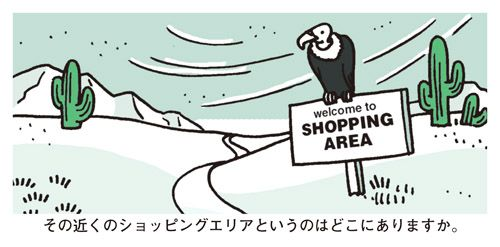
【ショッピング】
免税店はありますか。
×Is there a duty-free shop?
免税店というものは、この世に存在するのでしょうか。
場所をつけないで聞くと、存在の有無を尋ねる不自然な文に。Sure.（もちろん）、Many.（たくさんあります）などと、言われてしまう可能性あり。
Is there a duty-free shop nearby?
nearby（近くに）、within walking distance（歩いて行けるところに）、in town（この街に）など、具体的な場所を入れる。
【ショッピング】
古着を買いたいのですが、よい店はありますか。
×I'd like to buy some secondhand clothes. Is there a good shop nearby?
人がいらなくなった服を購入したいのです。近くに善良な店はありますか。
おなじみのbuyは「大量に購入する」「仕入れる」の意味合いが強い。secondhand clothesには、日本で連想する「古着」のようなおしゃれなイメージはなく、いらなくなった服を意味する。また、goodはこの場合「よい」ではなく、「善良な」の意になってしまう。
I'd like to get some vintage clothing. Is there a nice shop nearby?
普通に買い物をするならbuyでなく、getがよい。「古着」はvintage clothing。「よい」はniceで表現したい。
その近くのショッピングエリアというのはどこにありますか。
【ショッピング】
ちょっと見ているだけです。
×I am looking around.
きょろきょろ見ているだけです。
look aroundは「見回す」「きょろきょろする」といった意味合い。
I'm just looking, thanks.
買い物時の定番表現。店員にMay I help you？（いらっしゃいませ）と声をかけられたら、このように答える。thanksまで入れるようにしたい。
Just browsing, thanks.
browseは「店で商品をながめる」。パソコンでいう「ブラウザ」の語源はこれ。
【ショッピング】
8サイズを探しています。
×I'm looking for 8.
8個探しています。
この言い方だと、8個買いたいのだと誤解される可能性あり。
I'm looking for a size 8.
きちんとa をつけてa size 8とする。
【ショッピング】
化粧品売り場はどこですか。
（デパートで尋ねる）
×Where can I buy some cosmetics?
化粧品はどこの店に行けば買えますか。
売り場を聞く表現としては不適切。化粧品を売っているデパートなら、Why don't you get it here?（当デパートでも扱っております）といった答えが返ってきてしまうかも。
Where are the cosmetics?
デパートなどで売り場を尋ねるのは、Where's ～?やWhere are ～?と言う。
【ショッピング】
手に取ってみてもいいですか。
×Can I take it?
もらっていってもいい？
高級ブランドショップなどでは、無断で商品に触らず、店員にひと声かけてから手に取るのがマナー。ただし、こんな言い方をしたらいらぬ誤解を招いてしまう。無料サンプルをもらうときならこれでOK。
Can I pick it up?
Can I hold it?
動詞にpick～up、またはholdを使う。
【ショッピング】
ほかの色はありますか。
×Do you have another color?
どれでもいいからほかの色はありますか。
another～は「どれでもいいからほかの～」の意。
Do you have any other colors?
any other colorsで「なにかほかの色」の意。
Does this come in other colors?
「これはほかの色でも売られていますか」が直訳。come inは「～の形で売られる」を意味する。
【ショッピング】
カシミヤのセーターはありますか。
×Do you have a Cashmere sweater?
あなたはカシミヤのセーターをお持ちですか。
店員が客に向かって使いそうな言い方。
Do you have any Cashmere sweaters?
Do you have any～？で「～はありますか」と店で尋ねるときの聞き方に。aでなく、anyにするのがポイント。sweatersと複数形にするのも忘れずに。
【ショッピング】
色の種類はここに出ているだけですか。
×Are these all the colors you have?
これしか色はないの？
文末のyou haveが「ここにあるのはこれだけ？」と、相手をけなすニュアンスに。文末にyou＋動詞をつけると、否定的な意味合いを含むことが多い。
たとえば、Is this all the work you did?（これしか仕事をしていないのか）のyou didも同じ効果をもっている。こんな言い方をしたら、店の人にムッとされてしまう。None of your business.（ほっといてよ）なんて言われちゃうかも。
Are these all the colors?
シンプルにこれでOK。
Are there any other colors?
「ほかの色はありますか」。「～はありますか」はAre there any～？を用いる。colorsと複数形にすることも忘れずに。
Do you have this in other colors?
「これでほかの色はありますか」。in other colorsは「ほかの色」。in another colorsとは言わない。
【ショッピング】
これはフリーサイズですか。
×Is this a free size?
このサイズは無料でもらっていいんですか。
ネイティブはワンサイズの服をfree sizeとは呼ばない。こんなことを言ったら「無料でもらえるサイズ」と言っているのだと誤解されて、No, you have to pay.（まさか、お金はいただきますよ）なんて言われちゃうかも。ただし、アメリカ以外の英語圏なら、これで通じることもある。
Is this one-size-fits-all?
one-size-fits-allは「ワンサイズですべてにフィットする」。
【ショッピング】
別々に包んでいただけますか。
×Could you wrap these one-by-one?
ひとつひとつ順番に包んでいただけますか。
one-by-oneは「ひとつひとつ」「順番に」の意。これだと店員の包み方に不満があるように聞こえる。
Could you wrap these separately?
人になにかを頼むときの定番表現、Could you～？を使う。「別々に」はseparatelyでOK。
【ショッピング】
この香水の試供品はありますか。
×Do you have a sample for this perfume?
香水のための試供品はありますか。
Do you have a sample for～？は「～」に「人」がくるのが普通。たとえば、Do you have a sample for him?（彼にあげられる試供品はありますか）といった具合。
Do you have a sample of this perfume?
forでなくofを用いれば「この香水の試供品」となる。前置詞が命。
【ショッピング】
試着させてください。
×Can I put this on?
これ、着ちゃっていい？
このように言われた店員は、商品を盗まれるのではないかと心配するかもしれない。友人同士の服の貸し借りで使いそうな言い方。
Can I try this on?
試着の決まり文句はtry～on。アメリカなどでは、たいていの商品を試着することができる。ぜひ覚えおきたい表現のひとつだ。
Where's the fitting room?
「試着室はどこですか」。このように尋ねてもよい。
【ショッピング】
サイズが合いません。
×It doesn't fit me.
私には似合わないわ。
doesn't fit meはサイズでなく、その服が似合う、似合わないといった意味を表す。
It's too big[small / long / short].
「大きすぎます」「小さすぎます」「長すぎます」「短すぎます」と、具体的に伝えるのがポイント。ちなみにサイズがぴったりのときはIt fits me.でよい。
【ショッピング】
このスカートのサイズはいくつですか。
×What is the size of this skirt?
このスカートの広さはどのくらい？
What is the size of～? は「～の広さはどのくらいですか」を意味する。たとえば、What's the size of this house?（この家の広さは？）、What's the size of this land?（この土地の広さは？）といった具合。
What size is this skirt?
What size is～？で「～のサイズはいくつですか（何号ですか）」の意になる。洋服のサイズを尋ねるときには、迷わずこの言い方で。
【ショッピング】
ほかの服を着てみてもいいですか。
×May I try another clothes, please?
別の衣類全体を試してもいいよね？
May I～, please？は、子どもが母親に頼んでいるようなニュアンス。clothesは「衣類」を集合的に指すので、このような状況では使わない。
Can I try on something else?
Can I～？を使うのがごく自然。また、something elseと言えば、ほかの服を着てもいいかどうかを尋ねていることになる。
【ショッピング】
少し考えさせてください。
×Please give me time.
じっくり考えます。
深刻な悩みを抱え、その場で結論が出せないときにこのような言い方をする。通常のショッピングには適さないが、宝石やマイホームなど、高価なものを購入するときにはぴったり。
I'm not quite ready.
日常のショッピングシーンでの決まり文句。店員からHave you found what you're looking for?（お決まりですか）と声をかけられたら、このように答える。
【ショッピング】
サイズを計ってください。
×Could you measure my size?
私の寸法のサイズを計ってください。
重複した表現。measureには「サイズを計る、寸法をとる」という意味があるため、measure my sizeというと「私の寸法のサイズを計る」という屋上屋を架す言い方になってしまう。
Could you measure me?
Could you take my measurements?
サイズを計ってもらうときはmeasure meまたは、take my measurementsと言えばよい。
【ショッピング】
日本円で支払えますか。
×Can I pay in Japanese yen?
他国の円ではなく日本の円で支払えますか。
米ドル、香港ドル、オーストラリアドルなど、数種類あるドルとは違い、円は日本円しかないため、わざわざJapaneseをつける必要はない。
Can I pay in yen?
免税店など、円が使えそうなときにはこの決まり文句がぴったり。
【ショッピング】
高すぎて買えません。
×I can't buy this.
私はこれを買う能力がありません。
金額がどうこうというより、自分には買う資格がないと言っているように聞こえる。Why not?（あら、どうして？）などと言われる可能性あり。
I can't afford it.
affordは「（～を買う）余裕がある」の意。これを否定文にすると「高すぎて手が出ないわ」といったニュアンスがよく出る。
【ショッピング】
またにします。
×I'll try another time.
入荷されたら来てみます。
この言い方は、欲しかった商品が売切れてしまっていたときなどにぴったり。おそらく店員も、I'm so sorry.（本当に申し訳ございません）と謝ってくるはず。
I'll come back another day.
「また来ます」「またにします」といったニュアンス。このようにひと声かけると、店員もHave a nice day!（よい1日を！）などと返してくれて、気持ちよく店を出られる。
【ショッピング】
プレゼント用に包んでもらえますか。
×Can you wrap it as a gift?
プレゼント用に贈りもの用の包装をしてください。
wrapに「包装する」の意があるため、wrap ～ as a giftと言うと重複した意味になってしまう。日本語でも「包装してください」「包んでください」と言えば、贈りもの用だとわかってもらえる。英語でも同じこと。
Could you wrap these, please?
「プレゼント用に包んでもらう」は動詞のwrapだけでOK。
【ショッピング】
別のものと取り替えていただけますか。
×Could you change this for a different one?
これを別のものに作り変えてもらえますか。
changeは「別のものに変化させる」の意。品物の交換をして欲しいときの言い方としては不適切。How could I?（できるわけないでしょう）なんて言われちゃうかも。
Could I exchange this?
「交換する」「取り替える」はexchange。ここでは、相手に交換する許可を求めているわけではなく、自分にはそうする権利があるかどうかを聞いているので、主語は I（私）になる。
【ショッピング】
全部でいくらですか。
×How much are all these together?
これらを全部いっしょにまとめたとしたらいくら？
くどい言い方。レジに複数の商品を持っていけば、合計した金額を告げられるのがあたりまえ。「この人、本当に全部買う気があるのかしら」と勘ぐられるかも。
What's the total?
「合計は？」「全部でいくら？」の決まり文句。覚えておこう。
【ショッピング】
計算が違っていませんか。
×Isn't there a mistake in this bill?
この勘定は何かが間違っていませんか。
in this billは「この勘定書のどこかに」の意。したがって「何が間違っているのかはわからないが、この勘定書はどこかが間違っているのでは？」といったあいまいなニュアンスになる。
I think there might be a mistake.
「計算が間違っているようですが」のニュアンス。相手を責めることなく、さりげなく指摘している。
【ショッピング】
これは日本に持ち帰れますか。
×Can this be brought into Japan?
これは日本に持ってくることができますか。
bringは「こっちに持ってくる」の意で日本国内で使う表現。たとえば、インターネットで海外から商品を購入したいが、その商品の輸入が許可されているのかわからないようなときは、こちらの言い方でOK。
Can I take this to Japan?
takeは「あっちに持っていく」。海外にいるときに「日本に持って帰れるのか」「日本に持ち込めるのか」と尋ねるならこの言い方。
【ショッピング】
ここが壊れています。
×This is broken.
これ、まったく壊れちゃってるわよ。
部分的に壊れているというより、使いものにならないほど壊れてしまっているように聞こえる。店の商品に難くせをつけているように聞こえてしまう。
It's broken here.
「この部分が壊れています」と壊れている部分を指差して言う。
【電話をかける】
すみませんが、よく聞こえません。
×I can't hear.
私は耳が聴こえません。
I can't hear.は「耳が聴こえない」の意になる恐れがある。
I'm afraid I couldn't hear you.
最後にyouをつけるのが重要。youとは「あなたが言っていること」を表す。また、文頭にI'm afraid～（～が残念です）を持ってくると、柔らかな響きになる。
I'm having trouble hearing you.
I'm having trouble～で「～するのに苦労している」の意に。
【電話をかける】
もう少しゆっくり話していただけますか。
×Could you speak slower, please?
しゃべるのが早すぎるわ。もっと聞き取れるように話してください。
自分のリスニング力ではなく、相手の話し方に非があるように聞こえる。ただし、相手が異常なほどの早口ならこの言い方でOK。
Could you speak a little bit slower for me, please?
for meをつけるだけで、自分のほうに非があることが表現され、柔らかい響きになる。a little bitは、「もう少し」の意。
【電話をかける】
どちらさまですか
×Who are you?
お前はだれだ？
相手に失礼に当たるので、普通は使わない。いたずら電話の応対にはぴったり。
Who's calling?
ビジネスシーンでもよく使われる。カジュアルすぎることもなく、ちょうどいい言い方。決まり文句として覚えておきたい。
May I ask who's calling?
少し改まって聞くならこの言い方。
【電話をかける】
番号が間違っていますよ。
×Your number is wrong.
お前の番号、間違えているぞ！
間違った番号を教えた相手に向かって文句を言ってるように聞こえる。
I think you have the wrong number.
I thinkをつけるだけで、柔らかな響きになる。「おかけ間違いだと思いますが」といったニュアンス。
You may have the wrong number.
「間違いだと思いますよ」。この場合のmayは「～かもしれない」と可能性を述べるときの推量を表す。
【電話をかける】
ごめんなさい、間違えました。
×I'm sorry, I made a mistake.
ごめんなさい、失敗しました。
言っていることは通じるが、ネイティブは使わない。
I'm sorry, I have the wrong number.
haveは「持っている」の意。直訳すると「私は間違った番号を持っている」。転じて「番号を間違えました」の意味に。
【電話をかける】
日本語が話せる人と代わってください。
×I want to talk to someone who speaks Japanese.
日本語が話せる人に代わってよ！
クレーム時に使う言い方。なにか文句があり、英語では話にならないので「（あなたじゃ話にならないから）さっさと、日本語を話せる人に代わってよ！」と声高に言い放つニュアンス。
Is it possible to talk to someone who speaks Japanese?
want to～でなく、Is it possible to～？を使えば、婉曲的な言い回しになる。
Is there anyone there who speaks Japanese?
「そこに日本語ができる人はいますか」という表現。
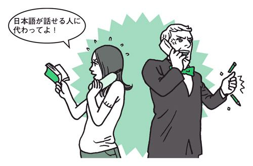
どうも、こんにちは。
（初対面の人に話しかけるとき）
×Nice to meet you. May I speak with you?
はじめまして。折り入って話したいことがあるのですが。
May I speak with you?では、なにやら重大な話があるように聞こえてしまう。この表現からは、楽しい会話をしようというニュアンスはまったく伝わらない。
Hi, how are you doing?
アメリカなどでは、初対面の人とも気軽にあいさつを交わすのが普通。そこから自然に会話へと発展するため、改まって「お話していいですか」と尋ねるのは不自然。天気や服装の話などで会話のきっかけを作るようにしたい。
【コミュニケーション】
東京から来ました。ひとり旅です。
×I'm from Tokyo, Japan. I am traveling alone.
東京から来ました。ひとりなの。
相手がナンパのつもりで話しかけてきた場合、了解の意にとられてしまう恐れあり。
I'm from Tokyo, Japan.
「東京から来ました」。トラブルを避けるためにも、あえてひとり旅ということは告げない方がよい。
【コミュニケーション】
いいお天気ですね。
×We have good weather today.
今日は大変いいお天気になっています。
お天気お姉さんが天気予報で使いそうなフレーズ。見知らぬ人に話しかけるひとこととしては不自然。
It's nice outside today.
天気や気候はitを主語にする。「今日はいい陽気ですね」「いいお天気ですね」といったニュアンス。
【コミュニケーション】
素敵な洋服ですね。
×I like your clothes.
いつもいつもステキな服装をしていますね。
その日の服装に限らず、その人のいつもの服装について語っているように聞こえる。頻繁に会う人に対して使うならいいが、初対面の相手に対しては不自然な言い方。But we just met.（初めて会ったのよ）なんて言われてしまうかも。
I like your outfit.
outfitは「服のコーディネート」「服一式」の意。「おしゃれですね」といった感じが伝わる。
【コミュニケーション】
おひとりでいらしたのですか。
×Are you here by yourself?
君、ひとりできたの？
ナンパで使われるフレーズ。そのつもりで言うならかまわないが、その気がないなら避けた方がよい。
Are you with your family?
Are you with a group?
変な誤解を招かないためにも、基本的には初対面の人にこういった質問はしないほうがいい。もし尋ねるのであれば、「ご家族といらっしゃったのですか」「グループ旅行ですか」など、複数で来たことを前提に聞くようにする。
【コミュニケーション】
名前を教えていただけますか。
×May I have your name, please?
貴殿の名は？
どちらかというとお役所風の言い方。日常会話には不向き。
I'm sorry, you're . . . ?
「すみませんが、そちら様は......？」のニュアンス。
【コミュニケーション】
私は会社員です。
×I'm an office worker.
ただの会社員です。
アメリカなどでは職業を聞かれたときに「会社員です」などといったあいまいな答え方はしない。
I'm an accountant.
I work for an insurance company.
「会計士をしています」「保険会社で働いています」など、具体的な職種を言う。
【コミュニケーション】
東京の銀行で働いています。
×I work for the bank in Tokyo.
東京で唯一の銀行で働いています。
bankに冠詞のtheがつくと、東京には銀行がひとつしかないように聞こえてしまう。It must be a big bank.（そうとう大きな銀行なのね）なんて言われちゃうかも。
I work for a bank in Tokyo.
冠詞をaにするのがポイント。an insurance company（保険会社）やa securities company（証券会社）なども同様。
【コミュニケーション】
大学生です。
×I'm a university student.
ユニバーシティ大学の大学生です。
「university＝大学名」だと思われてしまう。University of Californiaなどといった、具体的な大学名を言う場合以外は、大学はすべてcollegeでOK。
I'm a college student.
より具体的に言うならI'm studying history at college.（大学で歴史を勉強してます）となる。
【コミュニケーション】
あなたの趣味は？
×What are your hobbies?
今、凝っているものはなんですか。
hobbyは「凝っていること」や「時間や金を惜しみなくつぎ込めるような個人的な楽しみごと」を指すことが多く、日本語の「趣味」とは少しニュアンスが異なる。
What do you do in your free time?
趣味を尋ねるならこの言い方。答えはより具体的に、I enjoy fishing.（釣りを楽しんでます）、I play tennis.（テニスをよく楽しみます）などと言う。free timeをspare timeと言ってもよい。
【コミュニケーション】
日本の伝統的なスポーツには相撲や柔道などがあります。
×Japanese traditional sports are sumo wrestling and judo.
日本の伝統スポーツは相撲と柔道だけです。
この言い方だと、日本には相撲と柔道しか伝統的なスポーツがないように聞こえる。剣道や空手、合気道など、ほかにも優れた伝統スポーツはあるのだから、できればそういったニュアンスも出したい。
Japanese traditional sports include sumo and judo.
include（～を含む）を使えば、相撲と柔道に限定されずほかにもなにかあることをうかがわせる。
Sumo and judo are big-time Japanese sports.
big-timeは「極めて、とても」の意。「相撲や柔道はとても日本的なスポーツです」となる。
【コミュニケーション】
日本には四季があります。
×We have four seasons in Japan.
なんと、日本には四季というものがあるんですよ！
季節ごとの気温差にこそ違いはあるが、基本的に四季はたいていの国にある。よって、このような言い方をすると、四季が日本独自のものだと言っているように聞こえ、あまり感じがよくない。
We have four distinct seasons in Japan.
distinct（はっきりした）を使うのがポイント。これで「日本では四季の区別がはっきりしています」となる。
In Japan, the temperature changes a lot depending on the season.
「日本では、季節によって気温差がとてもあります」。このように言ってもよい。
【コミュニケーション】
折り紙を教えましょうか。
×Shall I teach you how to make origami?
折り紙を教えてあげてもよろしくてよ。
Shall I～？は、大げさな表現なので、アメリカのネイティブが使うことはほとんどない。きどっていて、偉そうに聞こえる可能性がある。英国の貴族が使いそうな言い方。
Would you like to know how to make origami?
Would you like to know how to～?で、「～の仕方を教えましょうか」といった意味になる。
Let me show you how to make some origami.
「折り紙の折り方をお見せしましょう」という意味。
【コミュニケーション】
素敵なお部屋ですね。
×What a wonderful room it is!
なんて素晴らしいお部屋でございましょう。
主に年配の女性が口にする言葉。歌の歌詞のようにも聞こえるこんな古めかしい表現を、男性や若い年代の人が使うことはまずない。
What a nice room!
文末のit isが大げさなニュアンスを生みだすもと。「素敵な」もwonderfulでなく、niceを用いるのが自然。
【コミュニケーション】
これをどうぞ。
（プレゼントを渡す）
×This is for you.
はい、これはあなたの分よ。
たくさんあるなにかをひとりずつ配っているような感じに聞こえる。たとえば、義理チョコがたくさん入った袋を片手に、「はい、これはあなたの分、こっちはあなたので、これは......」といった具合。
I got this for you.
「あなたのために持ってきました」が直訳。I hope you like it.（気に入ってもらえるとうれしいな）と続ければ、より気持ちが伝わる。
【コミュニケーション】
この果物は初めて見ました。なんという名前ですか。
×I've never seen this fruit. What is its name?
この果物は初めて見ました。お名前は？
What is ～ name?は、人やペットなどの名前を尋ねるときの言い回し。What is his name?（彼の名前は？）やWhat is your dog's name?（あなたの犬の名前は？）といった具合に使う。しかし、果物など、食べ物の名称を聞くときには使わない。
I've never seen this fruit. What do you call it?
What do you call it?は「それをなんと呼ぶのですか」が直訳だが、物の名前を尋ねるときの決まり文句。
【コミュニケーション】
ラムは苦手です。
×I don't like lamb.
ラムは嫌いだって言ってるでしょう。
子どもが「ぼくは～が嫌いなんだ」と、すねているような感じ。夕食に招かれたときなどにこんなことを言ったら、間違いなくムッとされる。もう少し遠まわしな言い方をするのが大人のマナーというもの。
I'm not much of a lamb eater.
I'm not much of a ～ eater. で「私は～はあまり食べないんです」の意。このような言い方をすれば、相手は傷つかない。
【コミュニケーション】
おなかがいっぱいです。
（おかわりをすすめられて）
×I've had enough.
もういらないよ。
この言い方では「もうおなか一杯、おいしかった」「おなか一杯です、ごちそうさま」といった感謝の気持ちは伝わらない。単に「もういらない」と冷たく言い放つようなニュアンスになってしまう。もう少し気の利いた断り方を覚えよう。
I'd love to, but I'm full.
「食べたいのですが、もうおなかいっぱいです」。最初に「食べたい」という気持ちを伝えるのが大切。
That sure was delicious, but I couldn't take another bite.
「とってもおいしいのですが、もう一口も入りません」。biteは「一口分の食物」。
【コミュニケーション】
紅茶をお願いします。
（コーヒーと紅茶のどちらがいいかと聞かれて）
×Tea, please.
紅茶でいいよ。
感謝の気持ちがあまりこもっていない。～, pleaseという言い回しは、日本人が思っているほど丁寧なニュアンスではないことを覚えておこう。
Tea would be nice.
「紅茶がいいです」「紅茶をいただけるとうれしいです」といったニュアンス。頻繁に使う表現なので覚えておきたい。
I'll take tea.
こちらも、食べ物や飲み物を頼むときの定番表現。
I think I'll have some tea.
「紅茶をいただこうかな」といったニュアンス。文頭にI thinkを持ってくると柔らかな響きになる。
【コミュニケーション】
お寿司を食べたことがありますか。
×Have you ever eaten the sushi?
その寿司を食べた経験はありますか。
the sushiと言うと、実際に目の前にある寿司や、なにか特定の寿司について語っているように聞こえる。なににでもtheをつけてしまうのは考えもの。theのあるなしで、ニュアンスががらりと変わってしまうこともあるので気をつけよう。
Have you ever tried sushi?
冠詞はつけず、sushiだけでOK。動詞はeatのほか、tryやhaveでも。
【コミュニケーション】
日本にいらしたときは連絡してください。
×Please contact me if you will come to Japan.
わざわざ日本に来てくれるのなら、連絡してください。
if you will come to Japan はif you will kindly come to Japanを短くした形。これでは、ネイティブには、相手のためにわざわざ日本まで行くような感じに聞こえてしまう。
Please contact me if you come to Japan.
ifのあとは、現在形にするのがポイント。
Make sure to tell me if you ever come to Japan.
Make sure to～は「必ず～してください」の意。
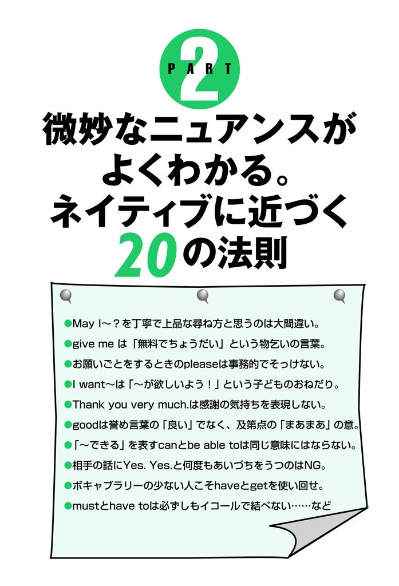
トイレを借りるときはCan I～？と聞くのがネイティブの常識。
なにかの許可を得るときによく使う、おなじみのMay I～?。実はこれ、かなり遠慮がちな聞き方で、相手に判断をゆだねるときに使うことが多い。二つの例を見てみよう。
①公園のベンチでたばこを取り出し、隣に座っている人に聞く。
May I?（タバコを吸ってもよろしいですか）
②街で見かけた人気歌手。サインが欲しいけど、なんだか怖そう。おそるおそる尋ねる。
May I have your autograph?（すみません、サインをいただけますか）
このように、相手に判断を任せていて、NOと言われる可能性が十分にあるような状況ならMay I ～?と聞くのがぴったりくる。
では、May I ～?の言い回しが不適切な例文をいくつか見てみよう。
①ホームパーティーに招かれた友人の家でトイレを借りる。
×May I go to the bathroom?（トイレに行かせてもらってもかまいませんか）
＊トイレに行かない人などこの世にいないのだから、相手に判断を任せるような言い方をするのはおかしい。
◎I need to use your bathroom.（トイレを借りるね）
◎Can I use your bathroom?（トイレを借りていい？）
＊このように言うのがごく自然。
②レストランや飛行機の中で水をもらうとき。
×May I have some water?（水をいただいてもよろしいですかね）
＊ここまでへりくだった言い方をする必要はない。
◎Could I have some water?（水をもらえますか）
◎Can I get some water?（水をもらえます？）
また、文末にpleaseをつけてMay I ～, please?などと言っている人も多いが、これは子どもが親におねだりや頼みごとをするときに使う定番フレーズ。May I have more chocolate, please?（もっとチョコレートをもらってもいいでしょう？）、May I go now, please?（もう行ってもいいでしょう？）といった具合に使う。
May I ～?を丁寧で上品な言い方だと勘違いして使っている人をよく見かけるが、状況を間違えて、May I ～?やMay I ～, please?といった言い回しを使ってしまうと、ネイティブの耳にはとても不自然に聞こえることが多い。大人が日常会話で普通に許可を求めるときには、May I ～?という言い回しはほとんど使わないのが現実だ。
ただし、店員が客に向かって言うMay I help you?（いらっしゃいませ）や電話や会社の受付などで客に名前を尋ねるときのMay I have your name, please?（お名前をいただけますか）など、ビジネスシーンでの客に対する言葉遣いとして定着している言い回しもある。
ショッピングで「これください」はI'll take it.がスマートなひとこと。
Give me～やPlease give me～、またGive me～, pleaseといった言い回しは、ネイティブの耳にはとても子どもっぽく響いてしまう。
というのも、ネイティブの子どもたちが「これちょうだい」「あれちょうだい」と親におねだりするときには、きまってこのフレーズを口にするからだ。たとえば、Mom, give me a dollar, please.（ママ、お願いだから1ドルちょうだい）といった具合。
日本語と同様に英語にも、大人にふさわしい言葉遣いと子どもが使う言葉がある。これをしっかり認識しておくようにしたい。
また、give me～という言い回しには「無料でちょうだい」、「お金はないけどちょうだい」といった意味合いが含まれているので、レストランで注文するときや買い物のシーンで使うのもおかしい。
「～ください」と言うつもりで、Please give me～と言ってしまっている英語の初心者をよく見かけるが、これでは意味がまったく違ってきてしまう。いくつか不適切な使用例を見てみよう。
①カフェでアイスティーを注文するとき。
×Please give me iced tea.（お金はないけど、アイスティーをちょうだい）
＊これでは「アイスティーを恵んでくれ」と言っているようなもの。
◎I'll take iced tea.（アイスティーをください）
◎I'll have iced tea.（アイスティーをいただきます）
＊カフェやレストランなどでアイスティーを注文するなら、このような言い方が落ちついた感じがしてベスト。
②ホテルのフロントで切手を買う。
×Please give me stamps.（切手をただでください）
＊切手はただでもらえるものではなく、お金を払って買うもの。この言い方では、ただでくれと言っていると思われても仕方がない。
◎Do you have stamps?（切手はありますか）
◎I'd like to get some stamps.（切手をください）
＊「切手をください（売ってください）」と言いたいなら、こちらの言い方が正解。
家族や親しい友人との会話では、Give me some.（ちょっとちょうだい）、Give me that.（それをこっちに渡してよ）などと、気兼ねなく言い合うこともある。
しかし、これはあくまでも、親しい間柄でのこと。これに慣れてしまい、ビジネスシーンや初対面の人との会話でうっかりGive me～といった言い回しを使ってしまうことのないように注意しよう。
強い意志を表すwillと単なる未来を表すbe going to。
安易に置き換えると意味がまったく違ってきてしまうので要注意。
中学や高校の英語の試験で、willをbe going toに置き換えるといった類の問題を受けた人も多いはず。しかし、これは大きな間違い。ネイティブはこの二つをしっかりと使い分けているのだ。
主語がIで始まるI will～は、未来のことでなく、強い意志や固い決意を表す言い回し。
たとえば、I will go to LA.と言えば「私は絶対にロスへ行くんだ」「私はどんなことがあってもロスへ行くつもりよ」といった意味になる。
しかし、willをbe going toに置き換えI'm going to LA.とすれば「ロスに行きます」と、単純な未来を表す意味になる。
では、I willを短縮してI'llと言った場合はどうなるかというと、これまた普通の未来形になる。つまり、I'll go to LA.はI'm going to LA.と同様「ロスに行きます」となるわけだ。
それでは、ここで、3つの言い方によるニュアンスの変化を再度確認してみよう。
①「大学へ行く」
・I will go to college someday.
いつの日か絶対に大学へ行ってみせるぞ。
・I'm going to college someday.
いつかは大学へ行くつもりです。
・I'll go to college someday.
いつかは大学へ行くつもりです。
②「一杯おごるよ」
・I will buy you a drink.
この僕が絶対に一杯おごるよ。
・I'm going to buy you a drink.
一杯おごるよ。
・I'll buy you a drink.
一杯おごるよ。
ここで注意したいことがひとつ。
それは、willが強い決意や固い決意を表明する意味になるのは、主語がIのときだけということだ。
HeやShe、We、Youなどの場合には、この法則は当てはまらない。
たとえば、She will go to LA.もShe's going to LA.もShe'll go to LA.もすべて「彼女はロスに行きます」「彼女はロスに行くでしょう」という意味の単純未来を表す。
つまり、willとbe going to［'ll］の意味が違ってくるのは、主語がIのときだけ。
そのほかの場合は、willもbe going toも'llもすべて同じ意味を表すというわけだ。
「コーラをください」ならCoke sounds nice.がフレンドリー。
pleaseをつけると、丁寧な言い回しになる。そう思って、とりあえず文の最後にpleaseを添えている人も多いのではないだろうか。
しかし、これは危険な勘違い。なぜなら、時と場合によっては、丁寧どころか、つっけんどんなひとこととなってしまうからだ。
たとえば、知人の家で飲み物はなにがいいかと聞かれ、「コーラがいいです」と言うとき、あなたは何と答えるだろう。大半の人は、Coke, please.というフレーズが口に出るはず。
けれど、この言い方はよほど気心の知れた親しい友人でない限り、事務的でそっけない響きに聞こえてしまう。この場合、Coke sounds nice.（コーラがいいです）やI'd like some coke.（コーラをいただきます）などがフレンドリーでおすすめ。
また、～pleaseという言い方は、レストランやショッピングでも、ついつい使ってしまいがち。しかし、これは、カタコト英語の王道とも言える表現。以下のような言い回しも覚え、TPOに合わせて使い分けるようにしたい。
・Coke would be nice.（コーラがいいです）
・Coke would be fine.（コーラがいいです）
・I'd like coke if you have it.（コーラがあればそれをいただきます）
・I'll take coke.（コーラにします）
・I'll have some coke.（コーラにします）
・I think I'll have some coke.（コーラをいただこうかな）
次に注意したいのが、相手になにかを頼むときのpleaseを使った言い方。
「ドアを閉めてください」と言うつもりで、Close the door, please.とか、Could you please close the door?などと言うと、「頼むからドアを閉めてよね」と、相手にプレッシャーを与える凄みのあるひとことになってしまう。
ネイティブは、この種の簡単な頼みごとをするとき、いちいちpleaseをつけない。代わりに、Could［Would］ you close the door?（ドアを閉めてもらえますか）、Maybe you could close the door for me.（ドアを閉めてもらっていいですか）などと言うのが普通だ。
そのほか、次にあげるような言い回しでお願いしても、相手は気持ちよく応じてくれるはずだ。
・Let's close the door.（ドアを閉めようか）
・Could［Would］you close the door for me?（ドアを閉めてもらっていいですか）
・Would you mind closing the door?（ドアを閉めてもらえる？）
＊Would you mind～?は、人に頼みごとをするときによく使う言い回しだが、この場合、アクセントに気をつけよう。mindを強めに話すと、「ドアを閉めてよ！」と、相手に対して怒っているように聞こえてしまうので注意が必要だ。
I want～は「～が欲しいよう！」という子どものおねだり。
大人はI'd like to～など別の表現でさりげなく要求を伝えるもの。
「～が欲しい」「～がしたい」など、希望・要求を伝えるおなじみのI want～やI want to～。しかし、これらの言い回しは、ネイティブの耳には、幼稚で子どもっぽく聞こえてしまうことをご存じだろうか。
たとえば、子どもが親になにかをねだるとき、I want this.（これが欲しいよう）、I want to eat ice cream.（アイスが食べたいよう）といった言い方をする。ネイティブにとって、I want(to)～は、これらのイメージが強く、「I want(to)～＝駄々っ子の決まり文句」として聞こえてしまう傾向が強いのだ。
では、ここで、I wantやI want to～を使った例文を、大人にぴったりの表現に言い換えてみよう。
①「動物園に行きたい」
×I want to go to the zoo.（動物園に行きたいよう）
◎I'd like to go to the zoo.（動物園に行きたいですね）
◎Going to the zoo sounds like fun.（動物園に行くなんて楽しそうね）
◎How about going to the zoo?（動物園なんてどう？）
◎Let's go to the zoo.（動物園に行こうか）
◎I'd really love to go to the zoo.（動物園に是非行きたいですね）
②「アイスクリームが食べたい」
×I want some ice cream.（アイスクリームが食べたいよう）
◎Some ice cream sounds good.（アイスクリームなんかおいしそうね）
◎I'm hungry for some ice cream.（ああ、アイスクリームが食べたい）
◎I'm in the mood for ice cream.（アイスクリームが食べたい気分だわ）
同じような理由から、店でものを購入するときや、レストランで注文するときにもI want～という言い回しは避けるべき。そのような場合はI'd like～が落ちついた感じがしてベストと言える。
①「これをください」
×I want this.（これが欲しいよう）
◎I'd like to get this.（これをください）
◎I'd like to take this.（これをください）
◎I'll take this.（これをください）
②「これをいただきます」
×I want to eat this.（これが食べたいよう）
◎I'd like this.（これをいただきます）
◎I'll have this.（これをいただきます）
◎I'd like French fries and a medium coke.（フライドポテトとコーラのMをください）
＊商品名で具体的に伝えるとさらによい。
Thank you very much.は感謝の気持ちを表現しない。
You've been a big help.などを使うと相手の心によく届く。
どんなに英会話が苦手な人でも、必ず知っているThank you.（ありがとう）。日本語同様、英語でも感謝の気持ちを表す言い方は何通りもある。まずは代表的なものをいくつか紹介しよう。
・Thanks.
・Thank you.
・Thanks a lot.
・Thanks so much.
・Thank you very much.
どれも意味、ニュアンスともに大した違いはない。Thanks.よりもThank you very much.の方が気持ちがこもっているかというと、実際にはそうでもない。
要は言い方で、気持ちのこもったThanks.はとても温かみのあるひとことなのだ。逆にThank you very much.を、抑揚のないイントネーションで言うと、とても冷たく聞こえてしまう。
次に、感謝の気持ちを伝えるときの比較的フォーマルな言い方を見てみよう。これらはビジネスシーンで使うにもぴったりだ。
・Thank you for all you've done.（いろいろとどうもありがとうございました）
・Thank you for everything.（いろいろとどうもありがとう）
・I'll never forget your help.（このことは一生忘れません）
・You've been a big help.（大変お世話になりました）
・I don't know how I'll ever thank you enough.（お礼の言いようもありません）
・I really appreciate all your help.（ありがとうございます）
最後に、友人同士や家族など、親しい間柄で使いたいカジュアルな「ありがとう」を。
・Thanks much. どうもありがとう！
・Thanks a million. どうもありがとう！
・Thanks a bunch. どうもありがとう！
＊bunch は「たくさんの」「山ほどの」の意。
・I owe you one. 恩にきるよ。ありがとう
・I owe you a big one. 恩にきるよ。ありがとう
・I owe you big-time. 恩にきるよ。ありがとう
Ithink～は「～だと思うけど」。
この微妙な使い分けがむずかしければ、思い切って使わない。
I think～は「私は～だと思う」と意見を述べる時によく使われる言い回しだが、イントネーションのつけ方や、I thinkを置く位置によってニュアンスが変わってくる。
たとえば、Iを強めに話せば「（あなたはどう思うかわからないが）私は絶対～と思う」と、自信を持って意見を述べるときの言い方になる。しかし、アクセントをthinkにおくと、意見を述べるというよりは「～だと思うけど」と自信なさげに述べるときのあいまいなひとことになってしまう。いくつか例を見てみよう。
① I think he's telling a lie.
・I think he's telling a lie.
彼は絶対に嘘をついていると思うわ。
・Ithink he's telling a lie.
彼は嘘ついてると思うけど。
② I think it's too expensive.
・I think it's too expensive.
それは絶対に高すぎると思う。
・Ithink it's too expensive.
ちょっと高すぎないかな。
また、I thinkを文末に置くと、「たぶん～だと思う」「たぶん～じゃないかな」といったニュアンスの、さらに自信がないときのひとことになる。
・He's coming at 5:00, I think.（彼は5時に来るよ、たぶんね）
・This is where I bought the t-shirts, I think.（そのTシャツを買ったのは、たぶんここだったと思うけど）
このような微妙なイントネーションの使い分けは、慣れないうちはとてもむずかしい。それにもかかわらず、英語を習いたての多くの人が、意見を述べるときにとりあえず、I thinkから始めてしまっているのは考えもの。
この際、意見を述べるときは、思い切ってI thinkをつけずに話してみてはどうだろう。He's telling a lie.（彼は嘘ついてるんだ）、This is ridiculous.（こんなのばかげてるよ）など、I thinkをつけなくても、それが「事実」ではなく「意見」だということは、その場の状況から誰でも判断できる。また、この方が言いたいことがストレートに伝わり、相手（ネイティブ）に与える印象も良い。
ただし、相手の非を指摘するときなど、断言しない方がよい状況があるのも事実。たとえば、ホテルのフロントなどで、調べてもらった電話番号が間違っていたときに、You gave me the wrong number.（電話番号が間違ってたぞ）と言ってしまうと、相手を一方的に非難しているように聞こえてしまう。こんな場合にはI thinkを文頭につけ、I think you've given me the wrong number.（教えていただいた番号が間違っているようなんですけど）と言えば、ソフトな響きになり、相手を不快な気分にすることもないはずだ。
No, thank you.は相手の好意をむげにする冷たい言葉。
誘いを断るときは感謝の気持ちを伝えるのが大人の礼儀。
「けっこうです」と言えば、だれもがすぐに思いつく表現がNo, thank you.。ついつい連発しがちなこの表現、ネイティブの耳には実際はどう聞こえているのだろうか。
No, thank you.は、相手の好意を断るときの丁寧な言い方だと思っている人が多いが、状況や言い方によっては相手を拒絶する冷たいひとことにもなってしまう恐れがある。もっとフレンドリーで温かみのある言い方を覚えて、お互いに気持ちよく言葉を交わせるようにしたい。
たとえば、レストランでウェイターやウェイトレスにWould you like some more coffee?（コーヒーのおかわりはいかがですか）とすすめられて、No, thank you.とひとこと。
にこやかに言えば問題ないが、にこりともせずに抑揚のない声でサラッと言ってしまうと「いらない」「もうけっこうだ」とつっぱねるようなひとことになってしまい大変感じが悪い。
こんなときにはI've had plenty. Thank you.（いいえ、もういいです。ありがとう）やNot for me. Thank you.（私はいいです。ありがとう）といった言い方をするのがベター。ほかに、I think I'll pass.（もうやめておきます）、I'm fine, thank you.（いいえ、大丈夫です。ありがとう）などと言ってもいいだろう。
さらに、相手からの助力の申し出や、誘いなどを断るときも注意が必要だ。Do you need some help?（手伝おうか）といった申し出に対して、No, thank you.と答えるのは、あまりにもそっけなく無愛想。しかも、感謝の気持ちは相手にほとんど伝わらない。
こんなときにはNo, I'm okay.（いいえ、大丈夫よ）やThanks, but no thanks.（ありがとう、でもいいわ）といった言い方をするのが大人のマナーというもの。
同じような表現として、次のような言い方もぜひ覚えておきたい。
・No bother.（大丈夫だから気にしないで）
・No, I'm all right.（いいえ、平気よ）
・Thanks for the offer, but it's okay.（ありがとう、でも大丈夫です）
相手からの誘いを断るときも同じことが言える。Would you like to go swimming?（泳ぎに行かない？）と誘われて、No, thank you.と答えたら、機嫌が悪いのかと思われてしまう。こんなときはI'd love to, but I can't.（行きたいけど、だめなんだ）やMaybe next time.（また次回誘ってよ）といった相手への気づかいが感じられる言い方をしたい。
次のような断り方も覚えておこう。
・I think I'll pass this time.（今回はやめておくよ）
・I'd really like to, but I have something I have to do.（是非行きたいんだけど、用事があって......）
・I can't this time, but please invite me next time.（今回は行かれないけど、次回は是非誘ってよ）
goodは誉め言葉の「良い」でなく、及第点の「まあまあ」の意。
気に入ったことを伝えるときはloveやgreatで表現する。
goodを辞書で引くと、「良い」「優秀な」「優れた」「立派な」といったありがたい意味ばかりが出てくる。しかし、実際の会話で使われるgoodは、必ずしも日本語の「良い」を意味しない微妙な単語なのだ。状況やイントネーションのつけ方によって、いかようにも意味が変わってくる。まずは次のダイアログを見てみよう。
Ａ：How was your day?
（おかえりなさい。今日はどうだった？）
Ｂ：Good.
（うん、まあね......）
＊元気のない下がり気味のイントネーション。
Ａ：Did something go wrong?
（なにか問題でも起こったの？）
Ｂ：Well, I got in a fight with my boss.
（うん、上司と喧嘩しちゃったんだ）
このように、goodは言い方によっては辞書に出ている訳とは似ても似つかない意味になる。
goodは会話の中では、「まあまあ」「悪くはない」といった意味で用いられることが多い。つまりこのgoodはnot badなのである。
①料理を試食して......。
・It's good.（まあまあね）
＊誉めていることにはならない。「おいしい」という気持ちを伝えたいならIt's really good.やI love it.と表現するべき。
②相手のアイデアを聞いて......。
・That's good.（いいんじゃない）
＊及第点といったところで、相手のアイデアにあまり感心していない。「いいですね」と誉めるなら、That's great.と言うのがぴったりくる。
③How are you?（元気？）と聞かれて......。
・Good.（まあまあです）
＊「元気です」と答えるつもりが、意味がまったく違ってきてしまう典型的な例だ。元気ということを伝えたいなら、Excellent!（絶好調さ！）やReally good!（すごく元気だよ！）、Just fine.（元気だよ）などを使う。もちろん、体調に合わせて、Not bad at all.（まあね）もOK。
ところで、アメリカの小学生の通知表がgoodばかりだったら親はどう思うか......。ちっともうれしくないはずだ。通知表のつけ方は学校によって若干の違いはあるが、Ａ→outstanding→とても優れている、Ｂ→excellent→優れている、Ｃ→good→良い（ふつう）、Ｄ→poor→劣っている、Ｆ→failure→落第、といった具合になっている。つまり、goodは「ふつう」のＣ。アメリカの場合、通知表がＣばかりだったら有名大学には入れてもらえない。
さらりと伝えるならI'mやYou'reなど、短縮形で話したい。
I'mはI amの短縮形。これはだれもが知っていること。でもネイティブがこの二つをしっかり使い分けていることは、意外に知られていないのではないだろうか。
I'm not going.は「私は行きません」と普通に伝えるひとことだが、I am not going.とbe動詞を短縮せずに言うと「私は絶対に行きません」と強く宣言することになってしまう。つまり、普通に述べるときにはbe動詞を短縮して話し、何かを強調して話したいときにはbe動詞を短縮せずに話す。これがネイティブ流の使い分けなのだ。この法則は肯定文にも通じることで、be動詞を短縮しないで話すとより強い肯定になる。
ちなみに短縮しないときは、その部分がより強調されるようbe動詞にアクセントをおいて言う。いくつか例を見てみよう。
①「あなたは最高の教師です」
・Youare a great teacher.
あなたこそ、まさに最高の教師です。
・You're a great teacher.
あなたは最高の教師です。
②「興味がありません」
・Iam not interested.
まったく興味ないよ。
・I'm not interested.
興味ないよ。
こういったネイティブ独自の使い分けを知らないと、思わぬ誤解を招いてしまうこともある。次のダイアログ、Ｎさん（ネイティブ）とＪさん（日本人）の会話を見てみよう。
Ｎ：I don't think it's going to rain tomorrow.
（明日は雨は降らなそうだね）
これを聞いたJさん、「明日は雨じゃないかしら」と言うつもりでこう答えた。
Ｊ：It is going to rain tomorrow.
すると、Ｎさんはむきになってこう言い返した。
Ｎ：Okay, I said,""
（わかったよ。だからI don't thinkって言っただろ。君と口論するつもりはないんだ）
この誤解の原因はJさんがbe動詞を省略しない言い方で答えたところにある。前述したように、be動詞は省略しないで用いると強調の表現になってしまう。そのため、It is going to rain tomorrow.は、Ｎさんの耳には「そんなことないわ、絶対に降るわよ！」というニュアンスに聞こえてしまったわけだ。
もし、ＪさんがIt's going to rain tomorrow.と答えていたら、「明日は雨じゃないかしら」といった意味になり、誤解は生じなかったに違いない。
「～できる」を表すcanとbe able toは同じ意味にはならない。
canはポジティブな「できる」、be able toはネガティブな「できる」。
中学、高校と受験英語を学んできた人たちの中にはbe able toとcanがまったく同じ意味だと思っている人も多いことだろう。でも実際には、ネイティブはこの二つをしっかりと使い分けている。どちらも「できる」という意味だが、この二つのニュアンスには微妙な違いがあるのだ。
canは普通に「～できる」という意味で、「私は～できる」「彼女なら～できる」といったポジティブな状況で使われるのが一般的。一方、be able toは「～できるはずなのに～しない」「～できるけどそうしない」といったネガティブな状況で使われることが多い。つまり、be able toの後ろにはbut節が続くことが多くなるわけだ。
たとえば、He can go.は普通に「彼は行ける」という意味で、そこにはなんの含みもない。しかし、He is able to go.と言うと「彼は行けるはずなんだけど（行かない）」のニュアンスになり、相手はその後ろにbut～が続くだろうと予測しながら聞くのである。いくつか例を見てみよう。
①「ジョンはすごい音楽家になれる」
・John can be a successful musician.
ジョンはすごい音楽家になれる。
・John is able to be a successful musician, but he has no motivation.
ジョンならすごい音楽家になれるはずなのにやる気がない。
②「ジュディはお金を貸すことができる」
・Judy can lend you some money.
ジュディならあなたにお金を貸せるわ。
・Judy is able to lend you some money, but she refuses.
ジュディならあなたにお金を貸せるのに、拒んでるのよ。
③「ベスは新車を買うことができる」
・Beth can buy a new car.
べスは新車を買える。
・Beth is able to buy a new car, but she doesn't have a driver's license.
べスなら新車を買えるのに、彼女ったら免許証がないのよ。
ところで、「～できる」は未来形でなんと言うか。
たいていの人は、be able toを使ってHe'll be able to finish on time.（彼は時間どおりに終えられるだろう）と答えるはず。だが、実際は現在形を用いたほうがより自然でネイティブらしい言い方になるのだ。つまり、He can finish on time.でOKということになる。
また、「～できる」を過去形で話すとき、canの過去形couldは使わないことも覚えておきたい。couldは仮定法のフレーズとして用いられるのが普通で、He could finish on time.と言うと「彼は頑張れば時間どおりに終えられるだろう」の意になってしまう。
「彼は時間どおりに終えることができた」と言いたい場合はHe was able to finish on time.やHe finished on time.などとするのが自然だ。
相手の話にYes. Yes.と何度もあいづちをうつのはNG。
きちんと聞いていることを伝えたいならYeah.やUh-huh.が好印象。
日本語の会話では、相手が話している間に「はい」「はい」と何度もあいづちを入れながら聞くのが普通。しかし、英語で話しているときには何度もYes. Yes.とあいづちをうつのは絶対に避けるべき。なぜなら、英語のYes. Yes.は日本語のあいづちと違い、「わかった、わかった」「はい、はい」のようなぶっきらぼうで感じの悪い受け答えになってしまうからだ。日本語の「ええ」や「はい」といったあいづちはYes.ではないのである。
相手の話を聞きながら、きちんと聞いていることを示すときのあいづちであれば、Yes.ではなくYeah.やUh-huh.などがベター。カジュアルすぎることはなく、ビジネスシーンやフォーマルな場で使ってもまったく問題ない。では、ネイティブがあいづちとしてよく使うものをいくつか見てみよう。
・I see.（なるほどね）
・That's right.（そうだよ）
・Right.（そうだね）
・I know.（そうだね）
・Yeah, I know.（ああ、そうだね）
・No way.（またまた。うそでしょ？）
・Hmm.（うーん）
・Really?（ああそうなの？ 本当に？）
・Is that right?（本当？ そうなの？）
・Interesting.（へえ。それはそれは）
次に、上記のあいづちが会話ではどのように使われているのか、実際のダイアログで確認してみよう。
Ａ：You know what? He cheated on me again.
（ねえ、聞いて。彼ったらまた浮気したの）
Ｂ：No way.
（うそだろ）
Ａ：I do everything for him.
（こんなに尽くしているのに）
Ｂ：Yeah.
（そうだね）
Ａ：Uh-huh. That bastard.
（そうよ。ひどいやつ）
Ｂ：Yeah, I know.
（まったくだよ）
Ａ：Maybe I should leave him.
（別れようかしら）
Ｂ：Hmm.
（う～ん）
英語圏の人たちはアイコンタクトを多用するため、日本人ほどあいづちをうたないのも事実。ネイティブと会話するときには、相手の目をしっかりと見ながらのアイコンタクトを心がけ、同時にここで紹介したあいづちも上手に使って、スムーズに会話を進めるように努めよう。
「あっちに」のtakeと「こっちに」のbring。この違い、おわかり？
「ゴミを出す」のがtake、「郵便物を取ってくる」のがbringとイメージする。
英語を覚えたての人にとって使い分けのむずかしい単語がtakeとbring。どちらも「持っていく」という意味があるため、どうしても混同しがちだ。
たとえば、ホテルのロビーに置いてある新聞を手に取り、これを部屋に持っていってもいいかどうかを尋ねるとき、英語に慣れていない人はつい、
Can I bring this to my room? と言ってしまう。
しかし、この場合はtakeを使った
Can I take this to my room? と言うのが正解なのだ。
基本的にbringは自分のいる場所へ持ってくるとき、takeは自分のいる場所から別の場所へ持っていくときに使う。つまり、この二つはcomeとgoのように正反対の言葉なのだ。ここで、わかりやすい二つの例文をあげておこう。
・Could you take the garbage out? ゴミを出しに行ってくれる？
・Could you bring the mail in?
手紙を取ってきてくれる？
ゴミは自分のいる家の中から外へ持っていくものなのでtakeを使い、手紙は郵便受けなどから自分のいる家の中へ持ってくるものなのでbringを使う。
どっちがどっちだったかわからなくなってしまったときには、この二つの状況を頭の中で映像としてイメージしてみるといいだろう。
次にtakeとbringの正しい使用例をいくつかあげておく。takeは「あっちに持っていく」、bringは「こっちに持ってくる」。
この鉄則を頭に叩き込みながら読んでみよう。
① take を使った例文
・Don't forget to take your umbrella.
傘を持っていくのを忘れないで
・Can I take these plants to Japan?
この植物を日本に持ち帰れますか
・Could you take me to the station?
駅まで送ってくれますか
② bring を使った例文
・Bring me the telephone.
電話を持ってきて
・Could you bring me some food?
食べ物を持ってきてくれる？
・Please bring me some extra towels.
余分なタオルを持ってきてください
This is a key.は「これはカギです」とは聞こえない。
カギを渡しながらひとこと添えるならHere is my key.がぴったり。
This is a～は日本人にとってもっともなじみのある言い回しのひとつ。しかし、なんでもかんでもThis is a～と言ってしまうのは考えもの。場合によっては不自然で失礼なひとことになってしまうからだ。
たとえば、ホテルのフロント係に自分の部屋のカギを手渡しながらThis is a key.と言ったとする。本人は「はい、カギです」と言うつもりで発したひとことだが、ネイティブの耳には「これがまさにカギというものです」と解説されているように聞こえてしまう。なぜなら、This is a～は不定冠詞aの働きによって「これが～というものです」と、人になにかを説明して聞かせているような意味を持つからだ。
したがってこういった状況でThis is a～を用いるのは不適切。カギを手渡しながら「はい、カギです」「カギです。どうぞ」とひとこと添えるなら、不定冠詞のaをmyに代えThis is my key.と言うのがごく自然だ。
また、Here's［Here is］は「これが～です。どうぞ」と相手に何かを手渡すときの決まり文句。こちらを使ってHere's［Here is］my key.と言ってもよい。ネイティブがよく使う言い回しなので、併せて覚えておきたい。
では、いくつか例を見てみよう。
①ホテルのフロント係にクレジットカードを差し出しながら言う。
×This is a credit card.（これがクレジットカードというものです）
＊間違いなく理解はしてもらえるが、自慢しているようでイヤミにとられる恐れあり。
◎This is my credit card.（クレジットカードです）
◎Here's my credit card.（はい、クレジットカードです）
②自分の名刺を渡しながら言う。
×This is a name card.（これが名刺と呼ばれているものです）
＊名刺を交換する習慣は日本特有のものではないのだから、このような言い方は不適切。
◎This is my name card.（名刺です）
◎Here's my name card.（はい、名刺です）
もちろん、何かを説明するつもりで言うのならThis is a～でOK。
次の会話はこの言い回しを正しく使っているよい例だ。
Ａ：What's that? I've never seen anything like it.
（なにそれ？ 見たことないよ）
Ｂ：This is a rice cake. It's Japanese-style fast food.
（これは「おにぎり」。日本風ファーストフードよ）
英会話はいくら文法的に正しくても、ネイティブの耳に不自然に聞こえてしまったら、ただのカタコト英語になってしまう。ある程度基本が身についたら、次はネイティブの耳にも自然に聞こえるすっきりとした英語の習得を目指そう。
「もう一方」を表すthe otherと「ほかの」を表すanother。
「別の映画を観に行こう」はLet's go to another movie.と提案する。
意味も発音も似ているために、しばしば混同されがちなotherとanother。
言い間違えると文のニュアンスがガラリと変わってしまう場合もあるので注意が必要だ。この二つの単語の意味と使い時の違いをしっかりと覚え、状況に合わせて正確に使い分けられるようにしておきたい。
まず、anotherから。anotherは「もうひとつの」の意だが、このanotherが、実は不定冠詞のanとotherが結合してできた言葉だということをご存知だろうか。つまり不定冠詞のanを伴うことで、otherは限定されずに「ほかにもいくつかある中からどれかひとつ」の意になるのだ。
たとえば、
Let's go to another movie. と言った場合には、
「ほかの映画を観ようよ」
という意になる。これはほかにもいくつか映画がある中で、どれでもいいから別のものを観ようと提案するときのひとことだ。
次にotherだが、定冠詞のtheをつけてthe otherとした場合には、otherが限定されるため、「二つあるうちのもう一方」を指す。
Let's go to the other movie. と言うと「もうひとつの方の映画を観ようよ」という意味になるわけだ。いくつか例文を見てみよう。
①「ハンバーガーをもらう」
・Can I have another hamburger?
ほかのハンバーガーをもらえますか。
・Can I have the other hamburger?
もうひとつの方のハンバーガーをもらえますか。
②「犬を買う」
・I'll buy another dog for you.
ほかの犬を買ってあげるよ。
・I'll buy the other dog for you.
もう一匹の方の犬を買ってあげるよ。
一方、定冠詞のtheがつかないotherは「ほかのすべての」「ほかのいろいろな」といった意になる。
具体的には、
My dog is smart, but other dogs are stupid.
（私の犬は利口だけど、ほかの犬はみんなバカよ）
I like green tea, but other types of tea don't taste good.
（緑茶は好きだけど、ほかの種類のお茶は嫌い）
Smoking in restaurants is okay in Texas, but not in other states.
（テキサスではレストランでたばこが吸えるけど、ほかの州では吸えない）
といった具合に使う。
I understand.はI got it.に、I enjoyed it.はI had fun.に言い換え可能。
単語の中には、使われ方によってさまざまな意味を持つものが数多くある。その代表がhaveやgetといった基本動詞だ。
単語をひとつひとつ地道に覚えていくより、数は少なくとも知っている単語を十分に活用できるようになることの方がずっと大切。なぜなら、日常英会話で使われる単語の割合を見てみると、こういった基本動詞が占める割合が非常に高く、難解な単語のほとんどが易しい単語だけで簡単に言い換えることができるからだ。
たとえばI enjoyed it.（楽しかったです）はI had fun.に、I understand.（わかりました）はI got it.に言い換えることができる。よって、こういった基本動詞をしっかりと使い回せるようになれば、英語力は飛躍的にアップするわけだ。
ここではhaveとgetを例にあげ、日常生活でよく使う言い回しを見てみよう。
①have
・have a good time（楽しむ）
・have a hard time（苦しむ）
・have a headache（頭痛がする）
・have a drink（飲む）
・have a good sleep（よく眠る）
・have an effect（影響する）
・have a fit（かっとなる）
・have a living（生計を立てる）
・have a party（パーティーを開く）
・have a meeting（会議を開く）
・have a seat（着席する）
・have fun（楽しむ）
・have trouble（苦労する）
②get
・get a cold（風邪をひく）
・get a haircut（散髪してもらう）
・get help（助力を得る）
・get home（家に帰る）
・get ready（準備する）
・get a job（仕事に就く）
・get drunk（酔っ払う）
・get rich（金持ちになる）
・get in shape（体を鍛える）
・get paid（給料を受け取る）
・get the idea（ピンとくる）
・get started（始める）
haveとgetだけでなく、takeやmake、doなども大変使いでのある基本動詞だ。これらの動詞で言い表すフレーズには、教科書には出ていないようなネイティブ独特の言い方がたくさんある。
ネイティブがあまり使わないむずかしい単語は後回しにして、まずはこういった簡単な表現から覚えるようにしたい。
ネイティブの会話で頻繁に使われる I've got to～は I have toをより強調。
I have to～とセットで使えばさらに切迫感が増すひとことに。
ハリウッド映画を観ているとI've got to～という言い回しが頻繁に出てくることに気づくはず。これは「私は必ず～しなければならない」という意味のとてもネイティブらしいひとことで、I have to～をより強調して話したいときの言い回しだ。
つまり、I really have to ～とほぼ同意になり、I've got to clean my room.（本当に部屋を掃除しなくちゃならないんだ）といった具合に使う。
簡単な使用例をいくつか見てみよう。
・I've got to go to the bank.
必ず銀行に行かなくちゃ
・I've got to do some homework.
忘れずに宿題しなくちゃ
・I've got to save some money.
絶対にお金貯めなきゃ
さらに、I've got toはI have toとセットで使うと、切迫した感じがより効果的に相手に伝わることも覚えておきたい。ダイアログを見てみよう。
Ａ：I have to go. I need to be at the airport in 30 minutes.
（もう出かけないといけない。空港に30分で行かなきゃならないんだ）
Ｂ：First let me tell you about . . . .
（その前にひとつ......）
Ａ：I've got to go. I'll call you when I get back.
（とにかくもう行かなきゃだめなんだよ。戻ったら電話するから）
I have to go. （もう行かなきゃ）
というＡさんの言葉を無視して話し続けるＢさん。
そこでＢさんの言葉をさえぎるようにＡさんが、
I've got to go. （とにかくもう行かなきゃだめなんだ！）
とぴしゃり。これでＢさんにもしっかりとメッセージが伝わるというわけだ。
I have toと比べると、I've got toは若干カジュアルな響きを持つ言い回しになる。しかし、ネイティブの間では日常的にとてもよく使われる定番フレーズなので、ビジネスシーンなどで使ってもなんら問題はない。
ただし、書き言葉の場合は別。ビジネスレターなどといった正式な文書の場合はI've got toだとカジュアルすぎて失礼になる恐れがある。
そのような場合は迷わずI have toを使おう。
I should～は「実はそうするつもりがない」ときの言い回し。
「勉強しなくちゃ」ならI need to study.と言うのがぴったりくる。
I should～は「～すべきだ」と義務を語るときのひとことだが、微妙にネガティブな含みのある表現ということを知っておきたい。
I should～は実際には「～したほうがいいのはわかっているけど、しないだろうな」といった意味合いで使われることが多く、どちらかというと消極的になっているときのひとことだ。たとえばI should go to the party.と言うと「パーティーに行くべきなのはわかっているけど......（行かないだろう）」のニュアンスになる。つまり、I should～はそうするつもりがない場合に使うことが多い言い回しなのである。いくつか例を見てみよう。
・I should go to bed.（もう寝たほうがいいのはわかってるけど......）
・I should invite her.（彼女を招待すべきなのかもしれないけど......）
・I should study for the test tomorrow.（明日のテストに向けて勉強したほうがいいのはわかってるけど......）
普段の会話で普通に「～すべき」と言うなら、need toを使った言い回しがなんの含みもなくて適している。上記の文をneed toを使って言い換えてみよう。
・I need to go to bed.（もう寝なくちゃ）
・I need to invite her.（彼女は招待しなきゃならないな）
・I need to study for the test tomorrow.（明日のテストに向かって勉強しなくちゃ）
また、「あなたは～すべきだ」といった意のYou should～にも、意外なニュアンスが隠れている。これは「あなたは～すべきだけど、あなたのことだからしないでしょう」といった否定的な含みがある場合によく使われる言い回しなのだ。たとえば、You should go to the party.とすると「パーティーに行くべきなのに、君のことだから行かないでしょ」といったニュアンスになる。
・You should go to bed.（もう寝たほうがいいよ、君のことだから寝ないだろうけど）
・You should invite her.（彼女を招待すべきだけど、君のことだからしないでしょ）
・You should study for the test tomorrow.（明日のテストに向けて勉強をしたほうがいいけど、君のことだからしないだろうね）
このネガティブなニュアンスをなくすには、文頭にMaybeをつけるとよい。たとえば、Maybe you should go to bed.（もう寝たほうがいいんじゃない）、Maybe you should invite her.（彼女を招待したほうがいいんじゃないの）といった具合だ。
mustは仰々しく聞こえてしまうので日常会話で使うことは滅多にない。
日本の中学、高校で英語を学んだ人なら、must＝have toと覚えている人も多いことだろう。しかしこの二つ、必ずしもイコールではない。どちらも「～しなければならない」という意味だが、ネイティブはこの二つを状況に合わせてしっかりと使い分けているのだ。
mustは深刻な問題や公式的な問題について語るときに使われることが多く、日常的な軽い会話の最中に使うととても不自然に聞こえてしまう。たとえば、「今日は残業しないと......」を、I must work overtime today.と言ってしまうと、それを聞いたネイティブの耳には「本日私は残業をせねばならないのだ」といった具合に、とても仰々しく聞こえてしまうのだ。ネイティブであれば、残業程度のことでmustを使うことはまずない。
では、実際どのようなシーンでmustが使われるかというと、以下のようなものがあげられる。
・We must do something about pollution.（我々は汚染問題をなんとかしなければならない）
・Politicians must never lie to voters.（政治家は有権者に対して誠実でなければならない）
・Japan must do something to improve its economy.（日本は景気回復策を打ち出さなければならない）
一方、同じ「～しなければならない」といった意味を持つhave toだが、こちらは誰かに強制されてそうしなければならない場合や、自分の意に反して何かをしなければならないときによく使われる。つまり、「嫌だけど～しなければならないんだ」「～するように言われちゃってるんだ」といったニュアンスになる。いくつか例文を見てみよう。
・I have to work this weekend.（嫌だけど、今週末は仕事なんだよ）
・I have to clean the yard.（庭を掃除するように言われちゃってるんだよ）
・I have to pay my taxes this week.（今週は税金を収めることになっちゃってるの）
さて、日常生活でちょっとした必要性が生じたときの「～しなくちゃ」「～しなきゃならないや」を表す場合はどう言うか。これには、need toを用いるのがぴったりくる。
need toにはmustのような大げさなニュアンスや、have toのような嫌々そうしているニュアンスはまったくないので、ネイティブの耳にはとても自然に聞こえるのだ。いくつか例をあげておくので、ニュアンスの違いをしっかりと確認しておこう。
・I need to go to the bank.（銀行に行かなくちゃ）
・I need to take a bath.（お風呂に入らなくちゃ）
・I need to be going.（もう行かなくちゃ）
・I need to call her.（彼女に電話しなくちゃ）
「どれか」を尋ねるとき、使い分けに迷ってしまうwhichとwhat。
選択肢が一目でわかるときはwhich、無限大ならwhatと覚えよう。
「～はどれですか」「どの～にしますか」といった疑問文をwhichとwhatのどちらで始めるかは、選択肢の量で決める。これがネイティブ流だ。
whichを使うのは選択肢が二つだけのときとは限らない。まず、この事実を頭に入れておきたい。ネイティブは、選択肢が3つ、4つあってもwhichを使うことがある。ひとことで言えば、選択肢の数が一目で把握できる程度しかないときにはwhichを、選択肢がそれ以上あるときにはwhatを使って尋ねるのが普通なのだ。
たとえば、フレーバーが数種類しかない小さなアイスクリームショップの店員は、客が一目で選択肢（アイスクリーム）の数を把握できるので、Which flavor would you like?（この中のどの味にしますか）と尋ねる。一方、選ぶのも迷ってしまいそうな何十ものフレーバーを揃えている大きなアイスクリームショップの店員は、What flavor would you like?（何味にしますか）といった具合に、whatを使って尋ねてくるはずだ。
同じように、ネクタイを数本しか持っていない人にはWhich necktie are you going to wear?（この中のどのネクタイにするの？）、ネクタイを何十本も持っている人にはWhat necktie are you going to wear?（ネクタイはどれにするの？）と尋ねる。
二つの使い分けの例をいくつかあげておくので、ニュアンスと使い時の違いに注意しながら読んでみよう。
①授業でどの教科書を使うのか尋ねる。
・Which book［s］ do we need to take to class?（授業では、この中のどの本が必要なの？）
＊数冊の教科書の中から、授業でどれを使うか聞くならwhichを使う。
・What book［s］ do we need to take to class?（授業ではどの本が必要なの？）
＊何冊もある教科書の中で、どれを授業で使うのかを尋ねるときにはwhatを使う。
②好きな曲を尋ねる
・Which song do you like best?（この中でどの曲が好き？）
＊カセットに入っている数曲の中でどの曲が好きか尋ねるときはこちら。
・What kind of music do you like?（どんな曲が好き？）
＊特に限定された選択肢がなく、さまざまな曲の中でどんな曲が好きかを尋ねる。この場合はwhatを用いる。
選択肢が多いとも少ないとも言えないときは、whichでもwhatでもOKな場合が多い。
一例をあげると、ハワイにある5つの島の中でどの島がいちばん好きか尋ねる場合、Which island do you like best?でも、What island do you like best?（どの島がいちばん好き？）でも、どちらでもよいことになる。
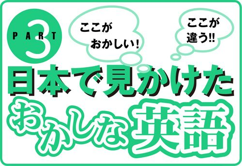
チャックが開いてるよ。
Chuck is down.
→チャックさんが倒れたんだ。
サインをください。
Can I have your sign?
→あなたの星座を教えてください。
無添加で安全な食事を！
Wild But Safe.
→危険だが安全！
古着スウェット。
Used Sweat.
→使用済み汗
昨日、シュークリームを食べました。
I ate a chou cream yesteday.
→昨日、靴墨を食べました。
■ 宣伝文句・注意書き ■
【ここがおかしい！ ここが違う!! 日本で見かけたおかしな英語】
★コインランドリーの張り紙
ライトが消えたら洗濯物をすべて取り出してください。
×Please remove all your clothes when the light goes out.
ライトが消えたら服を全部脱いでください。
remove all your clothesだと、「着ている服をぜんぶ脱げ」の意になる。英語的発想では、洗濯中の服はあくまでもlaundry（洗濯物）であってclothes（衣服）とは呼ばない。
Please remove all your laundry when the light goes out.
「洗濯物」はclothesでなく、必ずlaundryを使う。
【ここがおかしい！ ここが違う!! 日本で見かけたおかしな英語】
★ホテルの部屋にある歯ブラシのパッケージ
健康でさわやかな息に！
×Gives you strong mouth and refreshing wind!
毒舌になって、気持ちのいいオナラを！
strong mouthは「毒舌」「達者な口」、windには「風」のほか、「おなら」の意がある。give youは「あなたにもたらす」ということなので、このように言われてネイティブが連想するのは「おなら」だけ。これは、いったいどんな歯ブラシなのか。さわやかな息は期待できそうもない。
For healthy and fresh breath!
「～のために」はfor～。
【ここがおかしい！ ここが違う!! 日本で見かけたおかしな英語】
★東京のアイスクリームショップの前で
ペットを連れての入店はご遠慮ください。
×Please leave a pet outside.
ペットを一匹外につないだ人だけお入りください。
a petとすると「一匹のペット」の意になるため、より具体的な注意書きになってしまう。これではペット連れでない人は入れない店のように思われ、入店をためらってしまう人が出てきてしまうかも。
Please leave pets outside.
「ペット」はpetsと複数形にする。
【ここがおかしい！ ここが違う!! 日本で見かけたおかしな英語】
★シャンプーの注意書き
繰り返し使って健やかな髪に！
×Use repeatedly for severe damage.
より傷めるために繰り返し使ってください。
use for severe damageは「もっと傷めるために使う」の意。これでは、洗うたびに髪の傷みがひどくなるシャンプーになってしまう。
Use repeatedly for healthy hair.
「健康な髪のために」はfor healthy hair。
【ここがおかしい！ ここが違う!! 日本で見かけたおかしな英語】
★九州にある温泉の露天風呂にあったサイン
熱い湯に注意！
×Beware, you will be boiled.
ゆであがってしまわないように注意！
boilは「煮える」「ゆでる」の意。いったいその湯の温度は何度なのか。ネイティブがこれを見たら、その湯には恐ろしくて入れない。
Beware, water is hot.
湯が熱いことを伝えるにはWater is hot.と言う。シンプルな英語でOK。Watch out ! The water's hot.と言ってもよい。
【ここがおかしい！ ここが違う!! 日本で見かけたおかしな英語】
★東北某駅の構内で見かけたサイン
トイレは後方にあります。
×For rest rooms, go back toward your behind.
休憩所は、自分のおしりに向かって行ってください。
toward your behindだと「あなたのおしりに向かって」という意味になってしまう。2語のrest roomはトイレではなく「休憩所」の意。
Restrooms are behind you.
behind～（～の後ろ）を使う。トイレの表示は必ずrestroomに。
【ここがおかしい！ ここが違う!! 日本で見かけたおかしな英語】
★無添加メニューが売りのカフェで
無添加で安全な食事を！
×Wild But Safe
危険だが安全！
「無添加の」と言いたかったのだろうが、食べ物についてwild（野生の、野蛮な）を用いると、「危険な食べ物」といったニュアンスになってしまう。
Natural and Safe
「無添加」はnaturalを用いる。
【ここがおかしい！ ここが違う!! 日本で見かけたおかしな英語】
★とある駅の料金表に書かれた注意書き
お困りの方は駅員にお尋ねください。
×Ask the station employee about a trouble.
問題を起こしたい人は駅員にお尋ねください。
ask～about . . . は「...に興味があれば～に尋ねる」の意味。
Talk to a station employee if you have any problems.
「困ったこと」はany problems。
【ここがおかしい！ ここが違う!! 日本で見かけたおかしな英語】
★青森産のリンゴを使ったジュースのラベルに
青森産のリンゴを使ったジュース。
×Used Apple Juice from Aomori
青森産、人が飲んだ後のリンゴジュース。
usedは「使用済みの」。つまり「人が飲んだ後のリンゴジュース」となってしまう。
Apples from Aomori Used
～usedとすれば、「～を使っています」の意味になる。
【ここがおかしい！ ここが違う!! 日本で見かけたおかしな英語】
★サンドイッチの包装紙に
ジャムとマーガリンのサンドイッチ
×Jam and Margarine Sand
ジャムとマーガリンの砂
sandは「砂」。サンドイッチを「サンド」と略して言うのは日本だけ。
Jam and Margarine Sandwich
「サンドイッチ」は略さずにsandwichとする。
【ここがおかしい！ ここが違う!! 日本で見かけたおかしな英語】
★金物屋で手に取った包丁の注意書き
子どもの手の届かないところに置いてください。
×Keep out of children.
これで子どもを刺さないようにしてください。
Keep out of children.だと、「包丁を子どもに入れないように」の意になる。こんな注意書きが必要になったら世も末......。
Keep out of the reach of children.
keep out ofとchildrenの間に、reach of（～に届く）を入れると、「子どもの手の届かないところに」という表現になる。
【ここがおかしい！ ここが違う!! 日本で見かけたおかしな英語】
★あるホテルのカクテルラウンジの入り口のサイン
バーにはお子様をお連れにならないようにお願いします。
×Ladies are requested not to have children in the bar.
バーで子どもを産むことはお控えください。
have childrenは「赤ちゃんを産む」の意。産気づいてしまったのなら止めようがないが、そんなことがそうそう起こるとは思えない。
Patrons are requested not to bring children into the bar.
bring～into...を使う。これは「～を...に連れて入る」の意。
【ここがおかしい！ ここが違う!! 日本で見かけたおかしな英語】
★交通安全ポスターに書かれたスローガン
21世紀は安全運転で！
×Challenge safe driving for the 21st century.
21世紀は安全運転に抵抗していこう！
challengeは「挑む」「食ってかかる」の意。これでは暴走族のスローガンになってしまう。
Drive safely in the 21st century.
安全運転はdriving safely。また、前置詞はinを使ってin the 21st centuryとする。for the 21st centuryだと、「21世紀の間中ずっと」の意になってしまう。100年生きられる人は少ない。
【ここがおかしい！ ここが違う!! 日本で見かけたおかしな英語】
★とある古着屋の棚に張られていた張り紙
古着スエット
×Used Sweat
使用済み汗
スエット（トレーナー）をsweatと省略するのは間違い。これだと「汗」を意味してしまう。
Used Sweatshirts
スエット（トレーナー）は和製英語。sweatshirtsが正解。
【ここがおかしい！ ここが違う!! 日本で見かけたおかしな英語】
★とある温泉のリゾートホテルで見かけたサイン
人の身になって考えよう！
×Be considerate-- think for others!
思いやりをもって、自分の考えを人に押し付けよう！
think for othersは「他人の代わりに考える」の意。
Be considerate-think of others!
「他人の気持ちになって考える」はthink of others。forとofの違いに気をつけよう。
【ここがおかしい！ ここが違う!! 日本で見かけたおかしな英語】
★エレベーターのコントロールパネルの表示に
非常時はこのボタンを押してください。
×Push this button in case anything happens.
なにが起こってもこのボタンを押してください。
in case anything happensは「なにが起こっても」。「なにか起こったら」という日本語を無理やり英語に直訳したのだろう。
Push this button in an emergency.
「なにか起こったら」はin an emergencyまたはin case of emergencyを用いる。ぜひ、覚えておきたい。
【ここがおかしい！ ここが違う!! 日本で見かけたおかしな英語】
★ある英字新聞の求人欄で
性別不問
×No limit on sex.
セックスやり放題！
No limitで、「性別不問」と言いたかったらしい。やましいことを期待して応募した人がいたりして......。
Equal-opportunity employer.
「性別不問」はequal-opportunity。
【ここがおかしい！ ここが違う!! 日本で見かけたおかしな英語】
★タクシーの後部座席で見かけたサイン
事故の場合の用心にシートベルトをお締めください。
×Please fasten seatbelt to prepare for crash.
衝突を覚悟のうえシートベルトをお締めください。
prepare for～は「～を覚悟して」の意。こんなタクシーには絶対に乗りたくない。
Fasten seatbelt for your safety.
for your safetyで「安全のため」の意。
Buckle up for life!
「命を大事にシートベルトを締めましょう」の意。
【ここがおかしい！ ここが違う!! 日本で見かけたおかしな英語】
★在日外国人向けに掲載されたベビーシッターの広告
お電話ください！ いざという時お力になります。
×Please call us! We will provide you with any emergency.
お電話ください！ どんな非常事態も巻き起こしてみせます
provide～with...で「～に...を与える」の意。なんと物騒なベビーシッターだろう。こんな人たちにだけは子どもを預けたくない。
Please call us! We can help in an emergency.
in an emergency（緊急時に）を使う。
■ カタカナ英語 ■
【ここがおかしい！ ここが違う!! 日本で見かけたおかしな英語】
★ヘルスメーター
ヘルスメーターはどこにありますか。
×Where can I find health meters?
健康診断メーターはどこにありますか。
ネイティブがhealth meterと聞くと、手軽に健康診断ができるような便利な機械を思い浮かべる。
Where can I find bathroom scales?
「体重計（ヘルスメーター）」は英語ではbathroom scales。
Do you sell bath scales?
bath scalesとも言う。どちらでもOK。
【ここがおかしい！ ここが違う!! 日本で見かけたおかしな英語】
★クレーム
クレームがあります。
×I have a claim.
私にはそうする権利があります。
claimは「当然の権利としての要求」「～を要求する権利」といった意味。本来はYou have no claim on this property.（あなたにはこの土地の所有を主張する権利はない）といった具合に使う。
I have a complaint.
「クレーム」つまり苦情はcomplaintと言う。「クレームを言う」はmake a complaintという言い回しで、I'm here to make a complaint.（クレームがあって来ました）といった具合に使う。
【ここがおかしい！ ここが違う!! 日本で見かけたおかしな英語】
★トランプ
トランプが好きです。
×I like trump.
私はドナルド・トランプ氏が好きです。
trumpには「トランプ」という意味はない。確かに「トランプの切り札」という意味はあるが、これはほとんど使われていない死語のようなもの。ネイティブがtrumpと聞くと、アメリカの有名な実業家であるDonald Trumpのことを思い出す人がほとんど。
I like playing cards.
「トランプ」はcards。「トランプをする」はplaying cardsと言う。
【ここがおかしい！ ここが違う!! 日本で見かけたおかしな英語】
★コンセント
コンセントはどこですか。
×Where is the consent?
承諾書はどこですか。
consentは「承諾」「同意」といった意味の言葉。このように言われたネイティブはconsent form（承諾書）を探しているのと勘違いしてしまう。
Where is the outlet [socket]?
「コンセント」はoutletまたはsocketと呼ばれている。
【ここがおかしい！ ここが違う!! 日本で見かけたおかしな英語】
★マンション
マンションを探しているのですが。
×I'm looking for a mansion.
豪邸を探しているのですが。
mansionは英語で「大邸宅」を意味する。日本でいうマンションは、英語ではapartmentやcondominiumと言うのが普通。「高級マンション」と言いたいならluxury apartmentなどと言えばよい。
I'm looking for an apartment.
マンションもアパートも、一戸建て以外はすべてapartmentでOK。
I'm looking for a condominium.
condominiumは分譲式のマンションを指す。
【ここがおかしい！ ここが違う!! 日本で見かけたおかしな英語】
★バイキング
ランチはバイキングがいいです。
×I'd like to eat Viking for lunch.
海賊のようにムシャムシャ食べたいな。
Vikingは9世紀頃に暴れまわったスカンジナビア人の「海賊」のこと。正確には「海賊を食べたい」という意味だが、このように言われたネイティブは「きっとこの人は、海賊のようにガツガツ食べるほどお腹が空いているのね」などと、勝手に解釈してしまうかもしれない。
I'd like to go to a buffet-style restaurant for lunch.
英語で「バイキング（食べ放題）のレストラン」はbuffet-style restaurant。「食べ放題のレストランに行きたいです」が直訳になる。
【ここがおかしい！ ここが違う!! 日本で見かけたおかしな英語】
★サイン
サインをください。
×Can I have your sign?
あなたの星座を教えてください。
有名人が色紙などに書く「サイン」はカタカナ英語。英語のsign は「標識」や「看板」といった意味でよく使われる。また、「星座」という意味もあり、「あなたは何座？」と質問していることになる。
Can I have your autograph?
有名人にお願いする「サイン」はautographと言う。また、カードや書類などにする「署名（サイン）」はsignature。
【ここがおかしい！ ここが違う!! 日本で見かけたおかしな英語】
★フリーダイヤル
フリーダイヤルありますか。
×Do you have free dial?
無料でもらえるダイヤルはありますか。
確かにfreeには「無料の」という意味があるが、通話料無料の番号をfree dialとは言わない。これだと電話機のダイヤルの部品を無料でもらおうとしているように聞こえる。
Do you have a toll-free number?
日本でいう「フリーダイヤル」は英語ではtoll-freeやtoll-free numberと呼ばれている。tollとは「使用料金」の意。
【ここがおかしい！ ここが違う!! 日本で見かけたおかしな英語】
★モーニングサービス
モーニングサービスに行ってくるよ。
×I'm going to a morning service.
朝の礼拝に行ってきます。
ネイティブがmorning serviceと聞くと、morning religious service（朝の礼拝）を思い浮かべるのが普通。「朝食メニュー」のことだとわかるネイティブはほとんどいない。
I'm going to have the breakfast special.
「モーニングサービス」はbreakfast special。「朝食のスペシャルメニューを食べてくるよ」といったニュアンス。
【ここがおかしい！ ここが違う!! 日本で見かけたおかしな英語】
★リサイクルショップ
この辺りにリサイクルショップはありますか。
×Is there a recycle shop near here?
この辺りに資源再生品を回収してくれる業者はいますか。
いかにも英語らしい「リサイクルショップ」だが、これも立派なカタカナ英語。実際、recycle shopという英語は存在しない。recycle は「（廃物を）再生利用する」という意味しかなく、古着や中古家具などはrecycleとは見なされない。このように言われたネイティブは、ペットボトルや空き缶などといった、資源再生できるものを回収してくれる業者を探しているのだと勘違いするかも。
Is there a second-hand shop nearby?
「中古品を取り扱う店」「リサイクルショップ」はsecond-hand shop。
【ここがおかしい！ ここが違う!! 日本で見かけたおかしな英語】
★エンゲージリング
エンゲージリングをなくしました。
×I lost my engage ring.
歯車をはめ込むリングをなくしました。
engage ringと聞くと、ネイティブには「連動するリング」つまり自動車の部品か何かのように聞こえてしまう。これでは、Does your car still run?（車はそれでも動いてますか）などと言われてしまう。
I lost my engagement ring.
engagement ringが正解。略して言うことはまずない。
【ここがおかしい！ ここが違う!! 日本で見かけたおかしな英語】
★ロス（ロサンゼルス）
ロスは好きではありません。
×I don't like Los.
お金を失うのは嫌いだ。
ネイティブの耳にはI don't like loss.（お金を失うのは嫌いだ）と聞こえてしまう。ネイティブはLos AngelesをLosと言わない。略す場合は、
I don't like LA.
LA（エルエイ）と呼び、I used to live in LA.（かつてロスに住んでいました）といった具合に使う。
もしくは普通にLos Angelsと言えばよい。
【ここがおかしい！ ここが違う!! 日本で見かけたおかしな英語】
★アメリカンコーヒー
アメリカンコーヒーをひとつお願いします。
×I'd like American coffee, please.
アメリカ産のコーヒーをください。
ネイティブがAmerican coffeeと聞くと「アメリカ産のコーヒー」という意味だと思ってしまうだろう。
I'd like coffee.
アメリカで出されるコーヒーはかなり薄いことが多い。濃いコーヒーが嫌いな人でも問題ないはず。
【ここがおかしい！ ここが違う!! 日本で見かけたおかしな英語】
★オープンカー
オープンカーはいくらで借りられますか。
×How much is an open car?
ロックされていないクルマはいくらで借りられますか。
open carと聞くと、ネイティブはunlocked car（ロックされていないクルマ）を思い浮かべる。They're the same as locked cars.（ロックされてるクルマと変わらないよ）なんて皮肉を言われそう。
How much is a convertible?
「オープンカー」はconvertibleと呼ばれる。
【ここがおかしい！ ここが違う!! 日本で見かけたおかしな英語】
★レジ
レジはどこですか。
×Where is regi?
レジさんはどこですか。
ネイティブがregiと略して言うことはない。このように言われたら、Reggieという名の人を探しているのだと勘違いしてしまうだろう。
Where's the cash register?
「レジ、金銭出納機」はcash register 。
Where's the checkout stand?
checkout standは「レジ」「清算台」という意味で、こちらもよく使う表現。ちなみに「レジ係」をcashierと言う。
【ここがおかしい！ ここが違う!! 日本で見かけたおかしな英語】
★クラクション
クラクションを鳴らしてみてもいいですか。（レンタカーに試乗して）
×Can I push the Klaxon?
クラッチを踏んでみてもいいですか。
Klaxonはアメリカのネイティブにはあまり馴染みのない言葉。クルマの中でこう言えば、発音が似ていることから「クラッチ」のことだと勝手に解釈されてしまうだろう。ちなみに「クラクション」はイギリスにあるクラクションの製造会社の名前からきたカタカナ英語。
Can I test the horn?
日本でいう「クラクション」は英語ではhornと呼ばれている。test the hornで「クラクションを鳴らしてみる」という意味になる。
Can I honk the horn?
honkは「（クラクションを）鳴らす」の意。
【ここがおかしい！ ここが違う!! 日本で見かけたおかしな英語】
★シュークリーム
昨日、シュークリームを食べました。
×I ate a chou cream yesterday.
昨日、靴墨を食べました。
「シュークリーム」もカタカナ英語。shoe cream（靴墨）と発音が同じなので、ネイティブの耳には「靴墨を食べた」というとんでもない意味に聞こえてしまう。
I ate a cream puff yesterday.
お菓子の「シュークリーム」はcream puff。
【ここがおかしい！ ここが違う!! 日本で見かけたおかしな英語】
★マニキュア
マニキュアを探しているのですが。
×I'm looking for manicure.
ネイルアートの店を探しているのですが。
manicureは「ネイルアート」や「爪の手入れをする」といった意味で使われる言葉で、商品の「マニキュア」のことではない。このように言われたら、マニキュアを買いたいのではなく、爪の手入れをしてくれる場所を探しているのだと勘違いされるだろう。ただし、その場合も正確にはWhere can I get a manicure?（ネイルアートはどこでできますか）となる。
I'm looking for nail polish.
日本でいう「マニキュア」は英語ではnail polishと呼ばれている。polishは「つやを出すもの」の意。ちなみにshoe polishは「靴墨」。
Where can I get some nail polish?
「マニキュアはどこに売っていますか」。
Do you have nail polish?
「マニキュアは売っていますか」。
【ここがおかしい！ ここが違う!! 日本で見かけたおかしな英語】
★チャック
チャックが開いてるよ。
×Chuck is down.
チャックさんが倒れたんだ。
「チャック」もカタカナ英語で、ネイティブに言っても「ジッパー」のことだとわかってもらえない。それどころか「チャックさん（Chuck）が倒れた」という、とんでもない意味にとられてしまう。
Your zipper is down.
日本でいうズボンなどの「チャック」や「ファスナー」は英語ではzipperと呼ばれている。
XYZ.(Examine your zipper.)
エックスワイズィーと読む。こっそり教えてあげるときの暗号のようなもの。Examine your zipper.は「チャックを見てみな」という意味。滅多に使うこともないだろうが、覚えておくと便利なひとこと。
【ここがおかしい！ ここが違う!! 日本で見かけたおかしな英語】
★シャープペンシル
シャープペンシルはありますか。
×Do you sell sharp pencils?
とんがってる鉛筆は売っていますか。
この言い方だと、芯のとんがっている鉛筆が欲しいのだと誤解されてしまう。No, but we do sell pencil sharpeners.（いえ、でも鉛筆削りならありますよ）なんて答えが返ってきたりして。
Do you have any mechanical pencils?
Do you have any ～?は店頭などで「～ありますか」と尋ねるときの決まり文句。
【ここがおかしい！ ここが違う!! 日本で見かけたおかしな英語】
★ボディチェック
空港ではボディチェックを受けなければなりません。
×You have to get a body check at the airport.
空港で健康診断を受けなければなりません。
body checkと聞いてネイティブがすぐに思い浮かべるのは「健康診断」。これを聞いて「所持品検査」のことだとわかるネイティブはほとんどいない。こんなことを言ったら、By a doctor?!（お医者さんに?!）なんてギョッとされてしまう。
You have to go through a body search at the airport.
空港で受けるボディチェック、所持品検査は英語ではbody search と呼ばれている。go throughは「～を通る」「～を受ける」の意。
You have to go through security at the airport.
ボディチェックはsecurity（警備、セキュリティ）でもよい。
著者紹介
ディビッド・セイン（David A.Thayne）
米国ユタ州出身。カリフォルニア州アズサパシフィック大学にて社会学修士号取得。日米会話学院、バベル翻訳外語学院などでの豊富な教授経験を活かし、数多くの英会話関係書籍を執筆。著書は『使ってはいけない英語』（河出書房新社）『しりとりEnglish1000』（ダイヤモンド社）『声に出して覚えたい英語』（集英社）など50点以上。現在、英語を中心テーマとして、さまざまな企画を実現するクリエーターグループ、エートゥーゼットを主宰。豊富なアイデアと行動力で、書籍・雑誌の執筆・翻訳からWWWコンテンツ制作まで、マルチに活躍中。
エートゥーゼットのホームページ
小池信孝
群馬県生まれ。翻訳家。
明治大学卒業後渡米。帰国後は翻訳家として、さまざまな分野の翻訳、語学書の作成を手がける。訳書に『ひらめきを富へ変える天才・ひらめきをドブへ捨てる普通人』『だれが子供を殺すのか』（インターメディア出版）『魔法のランタン』（オーエス出版）『朝日英語スタイルブック』（朝日出版）などがある。
その英語、ネイティブにはこう聞こえます
著 者 David A. Thayne（ディビッド・セイン）
小池信孝
発行日 ２００３年５月10日
発行者 荻野善之
発行所 株式会社主婦の友社
〒１０１－
東京都千代田区神田駿河台２－
制作日 ２０１３年10月５日
(C) A TO Z CO., LTD 2013
〈ご注意〉
本電子書籍に記載された内容やデータは、原則として底本発行時の取材・執筆内容に基づきます。
旧字体・異体字など、一部底本とは異なる新字体にあらためられている箇所があります。
本電子書籍の全部または一部を無断で複製・転載・改竄・公衆送信すること、および有償無償に関わらず、本データを第三者に譲渡することを禁じます。
個人利用の目的以外での複製等の違法行為、もしくは第三者へ譲渡しますと、著作権法、その他関連法によって処罰されます。